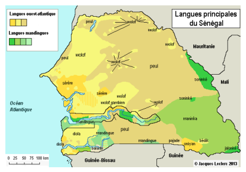
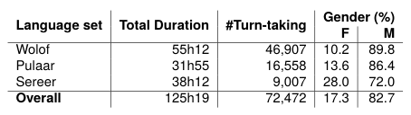
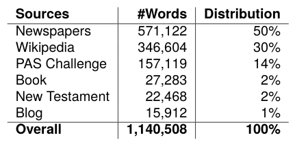
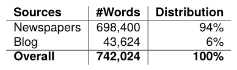
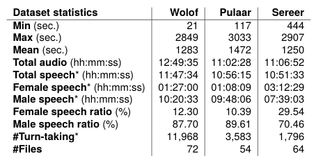

RAIL 2024Tafsiri ya mashine
Kallaama: Seti ya Data ya Hotuba Iliyonakiliwa kuhusu Kilimo katika Lugha Tatu Zinazozungumzwa Zaidi nchini Senegal
Tafsiri ya mashine, haijakaguliwa na binadamu. Makala asili ndiyo toleo la rejeo; sentensi zilizopigiwa mstari ni zile ambazo ukaguzi wa kiotomatiki haukuwa na uhakika nazo.
Proceedings of the Fifth Workshop on Resources for African Indigenous Languages @ LREC-COLING 2024.
Tafsiri ya Ernst van Gassen (Arktos AI Lab), yenye leseni CC BY-NC 4.0 kama makala asili. Matumizi tena yanaruhusiwa kwa kutaja mwandishi, kwa matumizi yasiyo ya kibiashara tu. Waandishi asili hawajakagua wala kuidhinisha tafsiri hii.
Maandishi matupu ya kutumia tena, pamoja na leseni yake: Kiswahili · LESENI
Taasisi
Elodie Gauthier, Aminata Ndiaye, Abdoulaye Guissé
Orange Innovation, Jokalante SARL, École Polytechnique de Thiès
Lannion, France, Dakar, Sénégal, Thiès, Sénégal
Anwani za barua pepe zimeondolewa kwa sababu za faragha. Zinapatikana katika PDF asilia.
Muhtasari
Kazi hii ni sehemu ya mradi wa Kallaama, ambao lengo lake ni kuzalisha na kusambaza korasi za lugha za kitaifa kwa ajili ya maendeleo ya teknolojia za hotuba, katika uwanja wa kilimo. Isipokuwa kwa Wolof, ambayo inanufaika na baadhi ya data za lugha kwa ajili ya uchakataji wa lugha asilia, lugha za kitaifa za Senegal kwa kiasi kikubwa hazizingatiwi na watoa huduma wa teknolojia ya lugha. Hata hivyo, teknolojia kama hizo ni funguo za ulinzi, uendelezaji na ufundishaji wa lugha hizi. Kallaama inalenga lugha 3 kuu zinazozungumzwa na watu wa Senegal: Wolof, Pulaar na Sereer. Lugha hizi zinazungumzwa sana na idadi ya watu, ikiwa na takriban wasemaji wa asili wa Senegal milioni 10, bila kusahau wale walio nje ya nchi. Hata hivyo, bado zina upungufu wa rasilimali katika suala la data zinazoweza kusomeka na mashine ambazo zinaweza kutumika kwa ajili ya uchakataji wa kiotomatiki na teknolojia za lugha, hasa zaidi katika sekta ya kilimo. Tunatoa seti ya data ya hotuba iliyonakiliwa iliyo na saa 125 za rekodi, kuhusu kilimo, katika kila moja ya lugha zilizotajwa hapo juu. Rasilimali hizi zimeundwa hasa kwa ajili ya utambuzi wa usemi wa kiotomatiki, ikiwa ni pamoja na mbinu za jadi. Ili kujenga teknolojia kama hizo, tunatoa korasi za maandishi katika Wolof na Pulaar, na leksimu ya matamshi yenye viingizo 49,132 kutoka seti ya data ya Wolof.
Maneno Muhimu
seti ya data ya usemi, lugha za Senegal, mazingira yenye rasilimali chache, kilimo
1. Utangulizi
Wakati teknolojia ya habari na mawasiliano ni muhimu kwa wengi kustawi, watu bilioni 6 bado wanakosa upatikanaji wa broadband, bilioni 4 wanakosa upatikanaji wa Intaneti, na bilioni 2 wanakosa upatikanaji wa simu ya mkononi (Zelezny-Green et al., 2018). Makadirio ya hivi karibuni kutoka Taasisi ya Takwimu ya UNESCO (2023) yanaonyesha karibu watu wazima milioni 213 (idadi ya watu zaidi ya miaka 15) ambao hawakuweza kusoma au kuandika, mwaka 2022, katika eneo lote la Afrika Kusini mwa Jangwa la Sahara, ikijumuisha karibu vijana milioni 49 (wenye umri wa miaka 15-24). Nchini Senegal, ANSD (2021) inaripoti kiwango cha jumla cha kutojua kusoma na kuandika cha 48,2%, kikifikia 62,7% katika maeneo ya vijijini.
Kiwango cha kusoma na kuandika kinahusiana na lugha rasmi ya nchi. Nchini Senegal, lugha rasmi ni Kifaransa lakini haizungumzwi sana na idadi ya watu katika maisha yao ya kila siku. Watu wa Senegal kimsingi hutumia lugha zao za asili au Kiwolofu, kama lugha ya mawasiliano, kuwasiliana. Benki ya Dunia (2021) inaripoti kwamba karibu 65% ya Wasenegal ambao hawatumii Intaneti wanakwamishwa na ukosefu wa ujuzi wa kidijitali. Hii kwa kiasi fulani inatokana na upatikanaji mdogo (kama sio kutokuwepo kabisa) wa maudhui katika lugha wanayozungumza. Kwa sasa, kuna upungufu mkubwa wa maudhui yanayoweza kufikiwa kwa wale ambao hawazungumzi lugha rasmi barani Afrika. Uendelezaji wa teknolojia na zana kwa lugha zinazozungumzwa zaidi ungewezesha sehemu kubwa zaidi ya watu wa Senegal kutumia simu janja na programu, na kufikia maudhui ambayo bado hayapatikani leo.
Kazi za utafiti kama Medhi et al. (2011) na mafanikio ya mawasiliano ya sauti ya WhatsApp yanaonyesha kwamba uendelezaji wa huduma za mazungumzo ya sauti katika lugha za kienyeji ni njia ya kuaminika na yenye matumaini ya kufanya huduma ziweze kufikiwa zaidi. Aker (2011) pia alipendekeza wakati huo kwamba kuchanganya mbinu inayotegemea sauti na taarifa zinazoweza kupatikana kupitia majibu ya maswali ya kawaida ya wakulima kungeshinda changamoto za kusoma na kuandika kutokana na njia za kawaida za kutuma ujumbe mfupi. Ili kufanya maendeleo katika eneo hilo, mifumo imara ya kutambua usemi inahitaji kubuniwa kwa ajili ya lugha hizo. Ingawa teknolojia za utambuzi wa usemi wa kiotomatiki (ASR) huwa zimekomaa katika lugha zinazopatikana zaidi kwenye Wavuti, bado kuna suluhu chache sana zinazohusu Lugha za Afrika.
Nchini Senegal, lugha za Wolof, Sereer, Pulaar, Joola, Malinké na Soninké zinatambuliwa kama lugha za kitaifa katika Katiba, lakini hakuna hata moja kati ya lugha hizi sita inayonufaika kwa umakini na maendeleo makubwa ya kiteknolojia yanayotokana na AI. Juhudi zimefanywa kuendeleza rasilimali na teknolojia za usemi katika Wolof (tazama sehemu ya 4) lakini hakuna rasilimali zinazopatikana kwa utambuzi wa usemi endelevu wa msamiati mkubwa (LVCSR) katika Pulaar wala Sereer. Hata hivyo, lugha za Wolof, Pulaar na Sereer zinazungumzwa katika zaidi ya theluthi mbili ya nchi ya Senegal (Leclerc, 2023).
Kilimo ndicho chanzo kikuu cha mapato kwa watu bilioni 2 duniani kote (Zelezny-Green et al., 2018). Nchini Senegal, 55% ya idadi ya watu inahusika katika mnyororo wa thamani wa kilimo, ikiwa ni pamoja na kilimo cha kifamilia, ufugaji wa mifugo, na uvuvi.
Leo, teknolojia za kidijitali zinawasaidia wakulima kupanua biashara zao kwa kuwawezesha kujiweka kwenye masoko, kuwapa taarifa kuhusu bei za bidhaa, na kuwapa ufikiaji wa huduma za kifedha zinazofaa. Hata hivyo, suluhu kama hizo bado hazifai kwa wakulima, hasa kutokana na kuenea kwa mawasiliano ya maandishi na matumizi ya lugha wasiyoizungumza, wanapotangamana na violesura hivi.
Kwa nia ya ukuzaji wa suluhu za usemi, seti hii ya data inakusudiwa kuziba pengo katika eneo hili.
Mchango wa karatasi. Karatasi hii inawasilisha seti ya data iliyoundwa kutoka kwa data ya usemi iliyozalishwa na kufafanuliwa wakati wa mradi wa Kallaama, pamoja na data ya kimaandishi iliyokusanywa kutoka kwenye wavuti, kwa lengo la kuunda suluhu za kutumia sauti katika lugha za kienyeji.
Muhtasari wa karatasi. Baada ya utangulizi, tunawasilisha mradi katika sehemu ya 2. Lugha zilizolengwa zinaelezewa katika sehemu ya 3 na rasilimali zilizopo katika lugha hizi zimeorodheshwa katika sehemu ya 4. Sehemu ya 5 inawasilisha mbinu ya ukusanyaji, wakati sehemu ya 6 inatoa maelezo kuhusu seti ya data. Kisha, tunawasilisha baadhi ya nyakati zenye changamoto tulizokumbana nazo wakati wa mradi katika sehemu ya 7 na tunataja baadhi ya vikwazo vilivyotokana katika sehemu ya 8. Hatimaye, sehemu ya 9 inahitimisha na kutoa baadhi ya mitazamo kuhusu matumizi ya Kallaama.
2. Mradi wa Kallaama
"Kallaama" inamaanisha "usemi" (kutoka Kilatini "verbum") katika Wolof.
2.1. Maelezo
Kama ilivyotajwa katika sehemu ya 1, hakuna rasilimali zinazopatikana za kujenga mifumo ya LVCSR katika Pulaar wala Sereer. Kiasi kidogo tu kipo katika Wolof, lakini hakuna kinachozingatia kilimo. Mradi wa Kallaama unalenga kuziba pengo hili kwa kuzalisha makumi kadhaa ya saa za data za sauti zilizoandikwa na kufafanuliwa za kienyeji, ili kufunza mifumo ya utambuzi wa usemi katika lugha tatu kuu za kitaifa za Senegal: Wolof, Sereer na Pulaar.
Uchaguzi wa lugha hizi 3 uliongozwa na idadi ya wazungumzaji nchini. Kuna takriban milioni 5 za wazungumzaji asilia wa Wolof, milioni 3.5 za wazungumzaji asilia wa Pulaar na milioni 1.3 za wazungumzaji asilia wa Sereer (Leclerc, 2023), ambazo zinawakilisha robo tatu ya jumla ya idadi ya watu. Hizi ndizo lugha 3 zinazozungumzwa zaidi nchini Senegal, na pia zinazungumzwa kuvuka mipaka kadhaa.
Data zinazozalishwa ni matamko ya asili, ya hiari, yenye msamiati katika muktadha, yaliyoundwa ili kuendeleza mifano ya utambuzi wa usemi ya msamiati mkubwa, hasa inayohusiana na kikoa cha kilimo. Utambuzi wa usemi ndio kizuizi kikuu cha kiteknolojia kinachopaswa kushindwa ili kuendeleza huduma zinazotegemea sauti kwa watu wenye ujuzi mdogo au wasiojua kusoma na kuandika kabisa. Kilimo kina nafasi muhimu katika shughuli za vijijini nchini Senegal. Ni mojawapo ya nguzo za uchumi wa Senegal, inakadiriwa kuchangia 15% ya Pato la Taifa mwaka 2022 kama ilivyotajwa katika Utafiti wa Kila Mwaka wa Kilimo wa DAPSA (2023), na sehemu kubwa ya idadi ya watu inabaki kutegemea moja kwa moja juu yake.
2.2. Matumizi kesi
Makampuni kadhaa na ya ndani na waanzishaji katika sekta ya TEHAMA wanazidi kuanza uzalishaji wa suluhu za AI zinazozingatia lugha za kitaifa. Hizi kimsingi ni suluhu za tafsiri ya moja kwa moja ya maandishi au ya sauti, zinazowawezesha kupanua wigo wa wateja wao na kutoa huduma zao kwa Kifaransa au Kiingereza kwa watumiaji wanaopendelea Wolof, Pulaar, Sereer, au lugha nyingine. Mipango mikubwa pia imetambuliwa katika maendeleo ya chatbots za lugha nyingi na voicebots. Hata hivyo, kutokana na uhaba wa data ya lugha asilia katika lugha za kienyeji, nyingi kati yao hutegemea data sanisi kutoka kwa mifumo ya tafsiri ya mashine. Aidha, miundo ya AI bado inashughulikia kilimo kwa kiasi kidogo tu. Hata hivyo, suluhu za kidijitali kwa kazi ya ugani wa kilimo hushughulikia mahitaji mbalimbali, ikiwa ni pamoja na huduma za utoaji taarifa, zana za usimamizi wa biashara ndogo, mafunzo na uimarishaji wa ujuzi, na huduma za kifedha (Zelezny-Green et al., 2018).
Seti ya data ya Kallaama inachangia ukuaji wa sekta ya kilimo nchini Senegal. Inaweza kuimarisha usalama wa chakula kwa kutoa taarifa muhimu moja kwa moja katika lugha ya asili ya wakulima, kupitia utengenezaji wa huduma zinazotegemea sauti kama vile ushauri wa kibinafsi wa kilimo na kifedha kwa wakulima wadogo. Aidha, maandishi yaliyotolewa huongeza seti za data zilizopo katika lugha za Senegal, na yatachochea maendeleo yanayotegemea AI kwa kilimo, kama vile kuanzisha misingi ya maarifa, wasaidizi wa mazungumzo, mifumo ya mapendekezo na mifumo ya usaidizi wa maamuzi.
3. Kuzingatia lugha zilizolengwa
Lugha za Wolof, Pulaar na Sereer zinazungumzwa na karibu 80% ya wazungumzaji asilia nchini Senegal. Cissé (2005) anaonyesha 43,7% ya wazungumzaji asilia wa Wolof, 23,2% ya wazungumzaji asilia wa Pulaar na 14,8% ya wazungumzaji asilia wa Sereer. Lugha hizi tatu ni za jamii ya Lugha za Kiniger-Kongo na ni sehemu ya kundi la familia ya Atlantiki ya Kaskazini. Hazina toni, tofauti na lugha nyingi za Kiniger-Kongo. Kwa kuwa na hadhi ya kitaifa, lugha hizo tatu zilipokea mfumo rasmi wa tahajia. Unategemea herufi za Kilatini.

Kielelezo 1: Ramani ya lugha kuu zinazozungumzwa nchini Senegal (Leclerc, 2023)
3.1. Wolof
Wolof ndiyo lugha inayozungumzwa zaidi nchini Senegal. Ni lugha ya asili ya takriban wazungumzaji milioni 5. Kiwolofu kinachozungumzwa nchini Senegali kinatambuliwa kwa jina la msimbo wa lugha wa ISO 639-3 "wol". Kwa kuzungumzwa na karibu 90% ya idadi ya watu, Kiwolofu ni lugha ya taifa ya mawasiliano, ikizidi kwa mbali Kifaransa katika matumizi (Cissé, 2005). Kwenye mitandao ya kijamii, maoni huandikwa hasa kwa Kiwolofu kujibu makala zilizoandikwa kwa Kifaransa. Bunge la Kitaifa linatoa huduma ya utafsiri kwani 20% ya wabunge hawazungumzi Kifaransa. Aidha, vituo vya televisheni na redio binafsi vimeanzisha vipindi katika lugha ya Wolof (OIF, 2022).
3.2. Pulaar
Pulaar ni sehemu ya lugha za Fulfulde. Kifulfulde kinazungumzwa katika takriban nchi 20 za Afrika Kusini mwa Jangwa la Sahara, na karibu watu milioni 30, kutoka Afrika Magharibi hadi Afrika ya Kati. "Pulaar" inarejelea lahaja inayozungumzwa nchini Senegal. Pulaar ni lugha ya asili ya takriban watu milioni 3.5 wa Senegal, na kuifanya kuwa lugha ya pili inayozungumzwa zaidi nchini humo. Wazungumzaji wa Pulaar kote nchini hawaelewani kila wakati. Tofauti za wazi katika lafudhi na leksika zinapaswa kuzingatiwa. Kunaweza kuwa na ukopaji na ushawishi wa pande zote kati ya lafudhi. Pulaar inayozungumzwa kaskazini, inayochukuliwa kama marejeleo nchini Senegal, na inayotumika katika maeneo ya Fouta Toro na Ferlo, ni tofauti na ile inayozungumzwa kusini, katika maeneo ya Fouta Djallon na Boundou, na kutoka katikati (hasa katika Saloum). Shughuli za kiuchumi zinazofanywa na Wafulani katika maeneo haya ndizo chanzo cha tofauti hizi, bila kusahau uhamaji wa watu na mabadilishano ya kitamaduni.
3.3. Sereer
Lugha ya Sereer inazungumzwa na takriban wazungumzaji milioni 1, na kuifanya kuwa lugha ya tatu inayozungumzwa nchini Senegal. Lahaja kadhaa zinazungumzwa nchini Senegal (Renaudier, 2012), na kuelewana kati ya wazungumzaji wa Kisereer wakati mwingine ni vigumu. Rekodi nyingi zilizopendekezwa katika seti hii ya data ziko katika lahaja ya Kisereer-Siin (ISO 639-3 code "srr"), ambayo inazungumzwa katika eneo kati ya Petite Côte (kusini mwa Dakar) na Gambia, na ambayo inachukuliwa kuwa Kisereer "sanifu". Hata hivyo, kulingana na mahali rekodi ilipofanywa, inaweza kuwa katika lahaja nyingine. Mwandiko rasmi unategemea lahaja sanifu ya Kisereer-Siin lakini unatumika kidogo sana kwa uandishi. Lugha hiyo kimsingi inazungumzwa.
4. Rasilimali za lugha zilizopo kwa Kiwolofu, Kipulaar na Kisereer
Nyenzo zaidi (katika nyanja yoyote ya matumizi, kutoka maelezo ya kilugha hadi ujifunzaji wa lugha) zinaweza kupatikana katika Kiwolofu, kama lugha ya mawasiliano. Hali ni tofauti sana na Pulaar na Sereer: kama lugha za asili, zinazungumzwa hasa na kuandikwa mara chache. Uwepo wa Wolof mtandaoni ni mkubwa zaidi kuliko Pulaar na Sereer, ukiakisi nafasi yake katika jamii ya Senegal.
Ili kujenga suluhu zinazotegemea sauti, seti chache sana za data zilitolewa hadi sasa katika Wolof. Seti za data za usemi za Pulaar na Sereer karibu hazipo, isipokuwa mipango iliyowasilishwa hapa chini. Kabla ya kazi hii, seti kubwa zaidi ya data ya usemi iliyonakiliwa katika Wolof ilikuwa ile iliyokusanywa na Gauthier et al. (2016). Inajumuisha saa 18 za sentensi zilizosomwa na kuthibitishwa.
Wolof pia inapendekezwa katika FLEURS, seti ya data ya lugha nyingi inayojumuisha tafsiri ya sentensi za Kiingereza ambazo zimesomwa na wazungumzaji asilia (Conneau et al., 2023).
Nelson (2022) aliendesha mradi wa ukusanyaji mkubwa wa usemi wa Wolof unaojumuisha saa 519 za rekodi za sauti, ambapo saa 6.45 zimenakiliwa hadi sasa. Kati ya manukuu 2,018 ya Wolof, tulihesabu tafsiri 608 katika Pulaar, 571 katika Sereer lakini rekodi 156 pekee za sauti zilizotafsiriwa katika lugha zote mbili.
Hatimaye, kazi kubwa ya mwisho tuliyoipata inayohusisha lugha tatu za Kisenegali zilizoshughulikiwa katika karatasi hii, ni sehemu ya mradi wa ukusanyaji wa data wa maneno yaliyojitenga kwa ajili ya utambuzi wa maneno muhimu, unaoongozwa na jumuiya ya Kisenegali ya Galsen AI (Djiba, 2021).
5. Mbinu ya ukusanyaji
5.1. Rekodi za sauti na maandishi
Rekodi za sauti. Rekodi zinahusu kilimo. Waliorekodiwa wanajumuisha wakulima, washauri wa kilimo, na wasimamizi wa biashara za kilimo na chakula. Data zote zinatolewa na Jokalante, kampuni ya Kisenegali inayobobea katika usambazaji wa taarifa kuhusu kilimo katika lugha za kienyeji. Aina za rekodi zinajumuisha vipindi vya redio shirikishi, vikundi vya majadiliano, ujumbe wa sauti, ujumbe wa push na mahojiano. Kwa hiyo, usemi wa papo hapo unatawala. Ubora wa sauti unaweza kutofautiana kulingana na aina ya kipindi. Kwa mfano, kikundi cha majadiliano hufanyika nje na hivyo kelele zinaweza kutokea kutoka nje (magari, upepo, ndege, sauti za ziada). Katika vipindi vya redio, muziki na vijingle wakati mwingine pia huonekana. Uchaguzi kutoka kwa rekodi hizi ulinakiliwa, na kusababisha zaidi ya saa mia moja za usemi wa papo hapo katika lugha tatu zilizolengwa (tazama Sehemu ya 6.1).
Unukuzi. Ili kutengeneza umbo la maandishi la rekodi za sauti, tuliwaomba wanakili kufuata sheria zilizohaririwa na Kituo cha Isimu Tumizi cha Dakar (CLAD), ambacho kinaratibu usanifishaji wa tahajia wa lugha za kitaifa nchini Senegal. Licha ya tahadhari hiyo, ilikuwa vigumu sana kupata umbo sanifu katika uandishi wa lugha zinazohusika katika kazi hii. Kama ilivyotajwa na Robert (2022) kwa Wolof, sheria rasmi hazitumiwi sana na idadi ya watu (kwa mfano, matangazo mara nyingi huandikwa kwa maumbo mbadala), hata kama tahajia rasmi imeanzishwa tangu 1971. Hali hiyohiyo inaonekana kwa Pulaar na Sereer, na hii inatokana hasa na ukweli kwamba lugha za kitaifa hufundishwa kidogo sana katika mfumo wa elimu. Aidha, kazi ya unukuzi ilihusisha rekodi za usemi wa kawaida, na kufanya kazi hiyo kuwa ngumu zaidi na kuchukua muda mrefu. Kazi ya unukuzi ilifanywa na wanafunzi 3 wa isimu, katika lugha wanayozungumza kwa asili. Walitumia zana maalum ya Transcriber kukamilisha kazi hiyo. Kazi hiyo ilichukua miezi 9 kukamilika. Kisha, wataalamu 3 waliohitimu, waliobobea katika lugha za manukuu, walipitia sehemu ndogo ya manukuu yaliyotolewa na wanafunzi. Mwanzoni, tulikuwa tunalenga kuhakiki nusu ya manukuu yaliyotolewa, kwa kila lugha. Lakini lilikuwa lengo kabambe kutokana na uchangamano na ugumu wa kazi iliyohitajika. Hata hivyo, karibu saa 13 za unukuzi wa hotuba zilikaguliwa katika Wolof, saa 11 katika Pulaar na saa 11 katika Sereer ndani ya muda uliotengwa.
5.2. Ukusanyaji wa maandishi
Lugha za Senegal zina rasilimali chache. Data chache sana katika lugha zilizolengwa ziligunduliwa. Kwanza kabisa, hakuna nyaraka kuhusu kilimo zilizopatikana. Tangu uchunguzi wa Renaudier (2012) uliotaja kwamba vyombo vya habari vya ndani vimeandikwa kwa kiasi kikubwa katika Kifaransa, vikiwa na magazeti machache tu yanayopatikana katika Wolof, na kwamba hakuna vyombo vya habari vilivyopatikana katika Sereer wakati huo, hali bado haijabadilika.
Vyanzo vingi vya maandishi vilivyopatikana vilikuwa katika Wolof. Korasi ya Wolof tunayosambaza inaundwa na vitabu, makala za Wikipedia (dump kutoka majira ya joto 2023), kitabu cha kwanza cha Agano Jipya, blogu mbili za kihistoria kuhusu Hubert Fichte (mwandishi wa riwaya wa Kijerumani) na Cheikh Ahmadou Bamba (mwanateolojia), makala za mtandaoni zinazopatikana kwa umma kutoka magazetini. Data za programu huria kutoka kwa shindano la Programme Algorithme et Solution (PAS), lililoandaliwa na Institution des Algorithmes du Sénégal (IAS), pia zimejumuishwa. Data zilizoandikwa kwa Kiwolof zinaweza pia kupatikana kutoka kwa miradi ya utafiti ya programu huria (hasa, mradi wa ALFFA na Masakhane). Tunachagua kutoziongeza kwenye toleo letu kwani tayari ni safi na rahisi kupata.
Tulipata kiasi kidogo sana cha maandishi katika Kipulaar. Tulipanua utafiti wetu wa data ili kujumuisha lahaja zinazozungumzwa katika mikoa inayopakana na Senegal, na hatimaye tukapata tovuti zaidi zilizoandikwa kwa lugha hii, hasa nchini Mauritania.
Kuhusu Kisereer, ingawa ni lugha ya tatu inayozungumzwa zaidi nchini Senegal, kukusanya data zilizoandikwa kunaleta changamoto kubwa. Licha ya utafiti wa kina, hakuna maudhui ya kimaandishi yaliyopatikana kwenye tovuti zilizotafitiwa. Tulienda hata kwenye maktaba kuu mbili za isimu na lugha za chuo kikuu huko Dakar (Chuo Kikuu cha Cheikh Anta Diop (UCAD) na Institut Fondamental d'Afrique Noire (IFAN)), na tukapata vitabu viwili tu vilivyoandikwa kwa Kisereer. Bado tulijaribu kutumia baadhi ya zana za Utambuzi wa Herufi za Macho (OCR) ili kuzigeuza kuwa maandishi ya kidijitali, lakini herufi maalum zilizopo katika Kisereer hazikutambuliwa.
Tumeondoa kwa makusudi mitandao yote ya kijamii ili kuepuka upendeleo ambao unaweza kusababishwa katika mifano ya baadaye. Kwa mfano, Dione (2016) aliona, katika utafiti wake kuhusu matumizi ya mtandaoni ya lugha za Kiwolofu na Kisereer, kwamba watumiaji wengi wa intaneti hutumia Kifaransa na Kiwolofu kwa kupishana katika ujumbe mmoja. Zaidi ya hayo, Wolof na Pulaar ndizo lugha mbili za taifa zinazopatikana kwenye tovuti ambazo mwandishi alizochunguza, huku Sereer ikiwa pia ni somo lake la utafiti. Zaidi ya hayo, mwandishi anaonyesha kwamba watumiaji wa intaneti hutumia Kiwolofu kukosoa, kuonyesha chaguo za kisiasa na ushirikiano wa siri, na kutukana. Kwa sababu hizi zote, tulipendelea kutokusanya data za kimaandishi kutoka kwenye mabaraza.
Korasi hizi za maandishi zinaweza kutumika kufunza mifano ya lugha ya lugha moja na ya lugha nyingi kuhusu mada ya kilimo. Mifano ya lugha inahusika katika kazi mbalimbali za NLP, kama vile urekebishaji wa alama za ASR au uelewa wa lugha asilia/uzalishaji (NLU/NLG) wa kielelezo.
5.3. Kamusi
Hatukupata kamusi yenye matamshi ya neno kwa Kipulaar na Kiserer, kwa hivyo hatukuweza kufunza modeli ya grapheme-to-phoneme (G2P) kwa lugha hizi. Kwa Kiwolofu, tulitumia leksika kutoka mradi wa ALFFA kufunza modeli ya G2P, ili kuzalisha unukuzi wa kifonetiki wa seti ya usemi ya Kiwolofu. Modeli ya G2P ilifunzwa kwa kutumia Phonetisaurus. Alama za kifonetiki zilizozalishwa ziko katika alfabeti ya X-SAMPA. Tunatoa modeli ya G2P na leksika katika hazina ya GitHub. Inaweza kuwa na manufaa kufunza modeli za ASR zenye msingi wa HMM.
6. Maelezo ya seti ya data
Seti ya data imetolewa chini ya leseni ya CC-BY 4.0. Data zote za kimaandishi (manukuu, korasi ya maandishi, leksimu) zinapatikana kwenye GitHub. Rekodi za sauti zinapangishwa kwenye majukwaa yote mawili ya OpenSLR na Zenodo.
6.1. Rekodi za sauti na maandishi
Faili za sauti zimebadilishwa kuwa 16 kHz, 16-bit, chaneli moja, ili kuendana na muundo sanifu unaotumika katika ASR. Manukuu yanatolewa chini ya muundo asili wa Transcriber (.trs), na pia katika muundo wa stm NIST (.stm) kwani huu hutumika zaidi na vifaa vya zana vya ASR.
Maelezo kuhusu seti za data za usemi yametolewa katika jedwali la 1.

Jedwali la 1: Muhtasari wa korasi ya usemi ya Kallaama
Idadi kubwa ya ubadilishanaji zamu inayoweza kuonekana katika jedwali la 1 kwa seti ya Wolof inaelezewa na wingi wa mahojiano na vikundi vya majadiliano, vinavyohusisha watu wengi zaidi katika mazungumzo.
Uwepo mdogo wa sauti za wanawake katika korasi hii unasikitisha, lakini unaakisi mahojiano yaliyofanywa na uwepo wa wanawake katika biashara ya kilimo.
Maelezo zaidi yametolewa katika kiambatisho B, ambapo pia tunaeleza sehemu ndogo iliyokaguliwa ya seti ya data.
6.2. Ukusanyaji wa maandishi
Seti ya maandishi iliyokusanywa kwa Kiwolofu, kabla ya matumizi ya mbinu za uchakataji baada ya ukusanyaji, ilifikisha jumla ya maneno 3,244,642. Seti ya maandishi iliyokusanywa kwa Kipulaar, kabla ya matumizi ya mbinu za uchakataji baada ya ukusanyaji, ilifikisha jumla ya maneno 5,462,823. Kama tulivyosema katika kifungu kidogo cha 5.2, hakuna data ya maandishi iliyopatikana kwa Kisereer.
Wakati wa uchakataji baada ya ukusanyaji, herufi zisizo za Kirumi ziliondolewa kutoka kwa maandishi ghafi. Alama ya uakifishaji imehifadhiwa ili kuwapa watumiaji uhuru zaidi, kulingana na jinsi korasi itakavyotumika. Hatimaye, mstari mpya uliongezwa baada ya kila alama ya mwisho ya uakifishaji (nukta, alama ya mshangao na alama ya swali) huku nafasi ziliongezwa kati ya aina nyingine ya alama ya uchapaji (kama vile koma, koloni, nusu koloni, kistari, mabano, n.k.).
Baada ya hatua hizi za baada ya uchakataji, korasi ya maandishi ya Wolof ina maneno 1,140,508, huku korasi ya maandishi ya Pulaar ina maneno 742,024. Maelezo yametolewa katika jedwali la 2 na jedwali la 3, kwa Wolof na Pulaar mtawalia. Upunguzaji huu mkubwa wa maudhui unaonyesha uwepo muhimu wa lugha nyingine katika maandishi, hasa Kifaransa na Kiarabu (hatukutumia kanuni ya utambuzi wa lugha, lakini tuliondoa herufi nyingi za alfabeti ya Kiarabu). Pia tulipata idadi kubwa kiasi ya herufi za Kisiriliki katika maandishi yaliyokusanywa kutoka Wikipedia.
Data iliyokusanywa itaimarisha uelewa wa matumizi ya lugha hizo na kuimarisha uwezo wa kuunda zana imara zaidi za kilugha. Pia itatumika kama msingi wa mafunzo kwa miundo ya lugha.

Jedwali la 2: Maelezo kuhusu maandishi yaliyopakuliwa kutoka mtandaoni kwa Wolof, baada ya kusafishwa

Jedwali la 3: Maelezo kuhusu maandishi yaliyopakuliwa kutoka mtandaoni katika Kipulaar, baada ya kusafishwa
6.3. Kamusi
Kwa lengo la kujenga mifumo ya ASR, tunatoa pia kamusi ya matamshi kwa Kiwolofu. Ina viingizo 49,132 vilivyofonetikishwa kutoka kwa manukuu ya usemi na maandishi. Viingizo vinaweza pia kuwa maneno ya mkopo, kama vile maneno ya Kifaransa, kwa kuwa ubadilishaji msimbo ni wa mara kwa mara nchini Senegal na kwa hiyo hutokea katika seti ya data ya usemi. Viingizo vimeandikwa kifonetiki kwa kutumia herufi za X-SAMPA.
7. Changamoto zilizojitokeza
Wanukuu walitatizika kuandika baadhi ya maneno kwa sababu ya kukosekana kwa herufi fulani kwenye kibodi za kawaida, kama vile ɓ (b-hook), ƈ (c-hook), ɗ (d-hook), ƥ (p-hook), ƭ (t-hook) ambazo zipo katika tahajia ya Lugha za Afrika, hasa katika Kipulaar na Kiseereer. Programu ya kibodi ya kuona ya SenLangEdit, iliyotengenezwa mahususi kuandika lugha za kitaifa za Senegal, bado ilifanya mchakato wa unukuzi kuwa rahisi.
7.1. Kanuni za uandishi
Ilikuwa vigumu hasa kupata wataalamu waliohitimu kwa ajili ya kukagua ubora wa manukuu yaliyotolewa. Tunamwomba kila mtaalamu atoe ripoti ya mapitio yao. Kwa Wolof, mtaalamu alitangaza kwamba kazi ilikuwa rahisi sana. Ili kukamilisha kazi ndani ya muda uliotengwa, alifanikiwa kukagua takriban saa 13 za manukuu ya hotuba na hitimisho lilikuwa la kutia moyo sana. Alibainisha ubora mzuri sana wa kazi, ukiwa na makosa machache sana. Kinyume chake, wataalamu wawili waliohitimu walioajiriwa kukagua manukuu katika Pulaar na Sereer walitangaza kazi yenye kuchosha. Licha ya hayo, wanafanikiwa kuthibitisha takriban saa 11 za rekodi za sauti kila mmoja. Walibainisha makosa mengi na kutuhadharisha kwamba kazi yao ingekuwa zaidi ya kuandika upya kuliko kukagua na kusahihisha tu. Tunafafanua makosa makuu yaliyopatikana katika kiambatisho A.
Kwa kweli, tathmini hii ya ubora wa maandishi kimsingi inaonyesha ukosefu wa ujuzi wa kuandika badala ya ukosefu wa umakini katika ubora wa unukuzi. Haya ni matokeo ya kujaribu kunukuu lugha ambayo kijadi haikuwa imeandikwa. Maadamu lugha hizi hazifundishwi kuandikwa, hakutakuwa na matokeo mazuri ya maandishi.
7.2. Lahaja zinazozungumzwa
Ukweli kwamba rekodi zinatolewa kote Senegal ulifanya kazi ya unukuzi kuwa ngumu zaidi, kwa sababu ya tofauti kadhaa za lahaja za Pulaar na Sereer zinazozungumzwa nchini humo (tazama sehemu 3.2 na 3.3). Tulichagua rekodi za sauti mwanzoni kabisa mwa mradi, kabla ya kuajiri wanukuu. Lakini wanakili wa Kipulaar au Kiserere wakati mwingine walisikiliza vipindi vilivyorekodiwa ambavyo hawakuvielewa kwa sababu ya mazungumzo katika lahaja ambayo hawaizungumzi. Kwa hiyo, ilitubidi kufanya kampeni ya pili ya ukusanyaji wa rekodi iliyozingatia lahaja mahususi zinazozungumzwa na wanakili.
Mchakato huu pia unaangazia hitaji la kuzingatia hila za semantiki kati ya aina za lahaja, hasa wakati wa kushughulikia somo fulani (katika kesi hii kilimo, lakini inaweza kuwa afya au fedha) na unaonyesha changamoto za asili katika kuhifadhi kwa usahihi na kikamilifu maana ya maneno katika lugha hizi.
8. Mapungufu
Kazi ya unukuzi ni kazi yenye changamoto kubwa, na kutoa nakala kutoka kwa hotuba ya kawaida, wakati matukio yanayoingiliana yanapotokea, wakati mwingine katika mazingira yenye kelele, ni changamoto zaidi. Ongeza kwa hili matumizi ya programu maalumu ambayo haifahamiki kwa wafanyakazi, yenye kibodi ambazo hazijabadilishwa kwa ajili ya kuandika lugha, na mwanzo wa kazi unakuwa mgumu zaidi.
Licha ya uangalifu wa wafanyakazi wote waliohusika katika mradi huu, seti hii ya data ina makosa kadhaa ya unukuzi, na tahajia iliyotumika inaweza isilingane kabisa na viwango vinavyotarajiwa, kama ilivyoonyeshwa katika Sehemu ya 7. Mnakili mmoja tu alichaguliwa kwa kila lugha kutekeleza kazi ya unukuzi. Pengine baadhi ya makosa yangeweza kuepukika ikiwa wanakili zaidi wangekuwa wakifanya kazi (ikidhaniwa hili linawezekana, kwa kuwa idadi ya watu wenye ujuzi ni ndogo sana). Lakini, kutokana na gharama za uzalishaji, tumechagua kuipatia jamii seti kubwa zaidi ya data iliyonakiliwa badala ya kuongeza idadi ya wanakili. Kwa njia hii, tumeweza kuongeza idadi ya mada zinazoshughulikiwa kuhusu kilimo. Seti kubwa zaidi ya data ya usemi pia inafaa zaidi kwa tafiti za kiwango kikubwa, kama vile utafiti wa kifonetiki na kifonolojia kuhusu lugha za Kiatlantiki, uwanja ambao kazi zinakosekana.
9. Hitimisho na Fursa
Katika makala haya, tunawasilisha kazi iliyofanywa ili kuunda seti ya data ya usemi iliyonakiliwa kuhusu Wolof, Pulaar na Sereer, lugha 3 zinazozungumzwa zaidi nchini Senegal. Seti hii ya data inajumuisha saa 55 za rekodi za sauti katika Wolof, saa 32 katika Pulaar na saa 38 katika Sereer, zote pamoja na manukuu yake yanayolingana. Tunatoa pia korasi zaidi za jumla za maandishi katika Wolof na Pulaar, pamoja na leksimu ya kifonetiki ya Wolof pamoja na modeli yake ya G2P. Rasilimali hizi zinaweza kutumika kwa ajili ya kuunda mifumo ya jadi ya ASR.
Kama ilivyobainishwa na tafiti nyingi za hivi karibuni (Joshi et al., 2020; van Esch et al., 2022; Ruder et al., 2022; Adebara and Abdul-Mageed, 2022), lugha nyingi zenye idadi kubwa ya wazungumzaji bado hazijawakilishwa vya kutosha katika tafiti na matumizi ya uchakataji wa lugha asilia (NLP), jambo linaloimarisha ukosefu wa usawa kama vile upatikanaji wa maarifa. Tunatumaini kwamba kazi hii itachochea hamu ya kutengeneza programu zinazojumuisha lugha za kienyeji za Senegal, lakini pia kwamba itakuwa chanzo cha msukumo na kutiwa moyo wa kutengeneza aina sawa ya rasilimali ili kusonga mbele kuelekea ujumuishaji wa lugha katika ulimwengu wa AI.
Fursa zinazotolewa na seti hii ya data ni nyingi. Kwa mtazamo wa kisayansi, seti ya data ya usemi iliyotolewa inaweza kutumika, kwa mfano, kuchunguza matukio ya kifonetiki yanayotokea katika muktadha wa hiari, kuchunguza mwingiliano wa usemi, au kuchunguza athari za usemi wa hiari na wenye kelele kwenye mifumo ya utambuzi. Kwa mtazamo wa kiufundi, seti hii ya data inaweza kutumika kutatua kazi mbalimbali za AI, ikiwa ni pamoja na uundaji wa kielelezo cha usemi (kama vile ubadilishaji wa usemi kuwa maandishi au uelewa wa lugha inayozungumzwa), uundaji wa kielelezo cha majibu ya kiotomatiki (kama kujibu QA), na uundaji wa kielelezo cha lugha (kutumika kuanzia mwanzo au kutumika kurekebisha kielelezo cha lugha nyingi kilichofunzwa awali). Kwa mtazamo wa kiteknolojia, inaweza kutumika kutengeneza mifumo ya utambuzi wa usemi, ya jumla au mahususi kwa sekta ya kilimo, pamoja na mawakala wa mazungumzo waliobinafsishwa kwa kujibu maswali kuhusu mada za kilimo zinazohusiana na muktadha wa Senegal na kwa lugha za kitaifa.
10. Shukrani
Mradi wa Kallaama uliwezekana shukrani kwa msaada wa kifedha kutoka kwa Lacuna Fund, juhudi ya kwanza ya ushirikiano duniani ya kufadhili data zilizowekwa lebo kwa ajili ya athari za kijamii. Lacuna Fund inakuza uundaji, upanuzi, na udumishaji wa seti za data zilizowekwa lebo katika maeneo matatu yenye mahitaji muhimu: kilimo, afya, na lugha.
Waandishi pia wangependa kuwashukuru na kuwatambua wanaisimu na wanafunzi wa kazi za sayansi ya data waliohusika katika mradi huu.
Maelezo
1 Kama ilivyotajwa na Creissels (2019), lugha zisizo za toni huzungumzwa hasa katika lugha za Kiatlantiki za magharibi mwa Senegal na Lugha za Kibantu za mashariki mwa Kenya na Tanzania (kama Kiswahili).
2 Lahaja nyingine ya Kiwolofu inazungumzwa nchini Gambia, ambayo msimbo wake wa ISO ni "wof".
3 Kwa kila seti ya data, idadi ya rekodi kwa kila aina ya programu imeelezwa kwa kina katika kiambatisho C.
4 http://clad.ucad.sn/
5 http://trans.sourceforge.net/
6 https://www.ias.sn/pas/
7 https://github.com/getalp/ALFFA_PUBLIC/
8 https://github.com/masakhane-io/masakhane-ner/
9 Bila kutofautisha lahaja zinazozungumzwa nchini Senegal.
10 https://github.com/AdolfVonKleist/Phonetisaurus/
11 https://github.com/gauthelo/kallaama-speech-dataset/
12 https://www.openslr.org/151/
13 https://zenodo.org/records/10892569/
14 https://esp.sn/senlangedit-un-clavier-virtuel-pour-la-promotion-des-langues-nationales/
15 Diouroup, Fatick, Kaffrine, Kaolack, Kebemer, Kelle, Koungheul, Louga, Matam, Ndoundour, Niodior, Nioro, Podor, Saint-Louis, Tambacound.
16 https://lacunafund.org/
11. Marejeo
Ife Adebara and Muhammad Abdul-Mageed. 2022. Towards afrocentric NLP for African languages: Where we are and where we can go. In Proceedings of the 60th Annual Meeting of the Association for Computational Linguistics (Volume 1: Long Papers), pages 3814-3841, Dublin, Ireland. Association for Computational Linguistics.
Jenny C Aker. 2011. Dial "A" for agriculture: a review of information and communication technologies for agricultural extension in developing countries. Agricultural economics, 42(6):631-647.
ANSD. 2021. Enquête harmonisée sur les conditions de vie des ménages (EHCVM). Technical report, Agence Nationale de la Statistique et de la Démographie (ANSD).
Mamadou Cissé. 2005. Langues, état et société au Sénégal. SudLangues. Revue électronique internationale de Sciences du langage, 5(1):99-133.
Denis Creissels. 2019. Morphology in Niger-Congo languages. In Oxford Research Encyclopedia of Linguistics.
DAPSA. 2023. Rapport de l'Enquête Agricole Annuelle (EAA) 2022-2023. Technical report, Direction de l'Analyse, de la Prévision et des Statistiques Agricoles.
Amadou Dione. 2016. Contacts et valorisation du sérère et du wolof, langues nationales du Sénégal: Pratiques langagières et usages en ligne. Ph.D. thesis, Université Grenoble Alpes (ComUE).
Pratik Joshi, Sebastin Santy, Amar Budhiraja, Kalika Bali, and Monojit Choudhury. 2020. The state and fate of linguistic diversity and inclusion in the NLP world. In Proceedings of the 58th Annual Meeting of the Association for Computational Linguistics, pages 6282-6293.
Jacques Leclerc. 2023. Sénégal. L'aménagement linguistique dans le monde.
Indrani Medhi, Somani Patnaik, Emma Brunskill, SN Nagasena Gautama, William Thies, and Kentaro Toyama. 2011. Designing mobile interfaces for novice and low-literacy users. ACM Transactions on Computer-Human Interaction (TOCHI), 18(1):1-28.
OIF. 2022. La langue française dans le monde. Technical report, Organisation International de la Francophonie.
Marie Renaudier. 2012. Dérivation et valence en sereer. Variété de Mar Lodj (Sénégal). Ph.D. thesis, Université Lumière Lyon 2.
Stéphane Robert. 2022. Wolof: a grammatical sketch. In Friederike Lüpke, editor, The Oxford guide to the Atlantic languages of West Africa. Oxford University Press, Oxford.
Sebastian Ruder, Ivan Vulić, and Anders Søgaard. 2022. Square one bias in NLP: Towards a multidimensional exploration of the research manifold. In Findings of the Association for Computational Linguistics: ACL 2022, pages 2340-2354, Dublin, Ireland. Association for Computational Linguistics.
UNESCO Institute for Statistics. 2023. Education: Number of illiterates. Last consulted on 13 Feb 2024 07:49 UTC (GMT).
Daan van Esch, Tamar Lucassen, Sebastian Ruder, Isaac Caswell, and Clara Rivera. 2022. Writing system and speaker metadata for 2,800+ language varieties. In Proceedings of the Thirteenth Language Resources and Evaluation Conference, pages 5035-5046.
World Bank. 2021. World development report 2021: Data for better lives.
Ronda Zelezny-Green, Steven Vosloo, Gráinne Conole, et al. 2018. Digital inclusion for low-skilled and low-literate people: a landscape review.
12. Marejeo ya Rasilimali za Lugha
Conneau, Alexis and Ma, Min and Khanuja, Simran and Zhang, Yu and Axelrod, Vera and Dalmia, Siddharth and Riesa, Jason and Rivera, Clara and Bapna, Ankur. 2023. Fleurs: Fewshot learning evaluation of universal representations of speech. 2022 IEEE Spoken Language Technology Workshop (SLT). PID https://huggingface.co/datasets/google/fleurs.
Djiba, Daouda Tandiang. 2021. Keyword Spotting with African Languages. Zenodo. PID https://doi.org/10.5281/zenodo.7561858.
Gauthier, Elodie and Besacier, Laurent and Voisin, Sylvie and Melese, Michael and Elingui, Uriel Pascal. 2016. Collecting Resources in Sub-Saharan African Languages for Automatic Speech Recognition: a Case Study of Wolof. European Language Resources Association (ELRA). PID https://hal.science/hal-01350037.
Nelson, Perry. 2022. Waxal Speech Data Resources. PID https://github.com/Waxal-Multilingual.
A. Maelezo kuhusu makosa ya unukuzi wa hotuba
A.1. Unukuzi wa Wolof
Makosa makuu yaliyotajwa ni:
- kushindwa kuheshimu urefushaji fulani wa vokali (k.m.: neno "mbooleem" limeandikwa badala ya "mboolem");
- kushindwa kuheshimu urudufishaji wa konsonanti ndani na katika nafasi ya mwisho kwa idadi ya maneno (k.m.: "loppaalëb" badala ya "lopaalëp");
- mkanganyiko kati ya konsonanti plosivu katika nafasi ya mwisho ya maneno fulani (/p/ dhidi ya /b/, /k/ dhidi ya /g/).
A.2. Unukuzi wa Pulaar
Makosa makuu yaliyoripotiwa katika unukuzi wa Pulaar ni yafuatayo:

- matumizi ya konsonanti sahili badala ya konsonanti ya kabla ya nazali (k.m.: "jiiya" badala ya "njiyaa");
- uunganishaji wa nomino na kijalizo chake (k.m.: "yimɓeɓe" badala ya "yimɓe ɓee");
- mkanganyiko katika urefushaji wa irabu (k.m.: "deemowo" badala ya "demoowo"; "reemoɓeɓe" badala ya "remooɓe ɓee").
A.3. Maandishi ya Sereer
Katika maandishi ya Sereer, makosa ya fonetiki, mofolojia na sintaksia yalipatikana. Hasa:
- konsonanti za kabla ya nazali ("/nd/" , "/mb/" , "/nj/" , "/ng/") zilizotumika badala ya konsonanti za glotali au za nazali ("ɓ" , "ɗ" , "ŋ");
- urefushaji wa vokali usioandikwa ("refe" badala ya "refee", "maga a mbag o njirña" badala ya "maaga a mbaag o njirñaa");
- nomino na kiwakilishi cha ngeli vimetenganishwa kama katika "xa qol axe" kilichoandikwa "xa qola xe" .
B. Maelezo ya seti ya data ya hotuba
Maelezo ya safu mlalo ya Jedwali 4 na Jedwali 5:
- "Min (sec.)" ni muda wa chini zaidi wa faili ya sauti katika seti ya data iliyotolewa.
- "Max (sec.)" ni muda wa juu zaidi wa faili ya sauti katika seti ya data iliyotolewa.
- "Mean (sec.)" ni muda wa wastani wa faili zote za sauti katika seti ya data iliyotolewa.
- "Total audio" ni jumla ya muda wa seti ya sauti.
- "Total speech" ni jumla ya muda wa hotuba wa seti ya sauti.
- "Female speech" ni jumla ya muda wa hotuba wa wasemaji wa kike ndani ya seti ya sauti.
- "Male speech" ni jumla ya muda wa hotuba ya wazungumzaji wa kiume ndani ya seti ya sauti.
- "Female speech ratio" ni asilimia ya muda wa hotuba ya wazungumzaji wa kike ndani ya seti ya sauti.
- "Male speech ratio" ni asilimia ya muda wa hotuba ya wazungumzaji wa kiume ndani ya seti ya sauti.
- "#Turn-taking" ni idadi ya vipindi vya kupokezana zamu za wazungumzaji katika seti nzima ya sauti.
- "#Files" ni jumla ya idadi ya rekodi na manukuu katika seti ya data ya hotuba.
Muda wa "Total speech" , "Female speech" , "Male speech" na "#Turn-taking" umekokotolewa kutoka faili za Transcriber (.trs). Taarifa hii inapaswa kuchukuliwa kwa tahadhari, kwani inategemea Usahihi wa maelezo yaliyofanywa na wanukuu. Taarifa nyingine zote katika jedwali zimekokotolewa kutoka faili za sauti (.wav).
B.1. Seti nzima
Jedwali la 4 linatoa baadhi ya takwimu kuhusu seti nzima ya data ya usemi.

* iliyotolewa kutoka annotations
Jedwali la 4: Maelezo kuhusu seti ya data ya usemi ya Kallaama
B.2. Seti iliyokaguliwa
Jedwali la 5 linatoa baadhi ya takwimu kuhusu sehemu ndogo iliyokaguliwa ya seti ya data ya usemi.

* iliyotolewa kutoka annotations
Jedwali la 5: Maelezo kuhusu sehemu iliyokaguliwa ya seti ya data ya usemi ya Kallaama
C. Aina za rekodi
Rekodi hizo zinatoka katika aina mbalimbali za vipindi na zinakadiriwa kwa kipimo cha 1 hadi 5 kulingana na utata wao unaowezekana kwa usindikaji wa usemi. Ukadiriaji huu ni wa kibinafsi na huzingatia vipengele kama vile muda wa rekodi, idadi ya wasemaji wanaozungumza, na hali za kurekodi.
Ukadiriaji wa 1 unaonyesha uchangamano wa kiwango cha chini, huku ukadiriaji wa 5 unaonyesha uchangamano wa kiwango cha juu. Kitambulisho hiki ni nambari ya kwanza inayounda jina la faili.
Jedwali la 6 linaonyesha idadi ya rekodi kwa kila aina ya programu, kwa kila seti ya lugha.

Jedwali la 6: Idadi ya rekodi kwa kila aina ya programu, kwa kila seti ya data ya lugha
English na Kiswahili
Kallaama: A Transcribed Speech Dataset about Agriculture in the Three Most Widely Spoken Languages in Senegal
Kallaama: Seti ya Data ya Hotuba Iliyonakiliwa kuhusu Kilimo katika Lugha Tatu Zinazozungumzwa Zaidi nchini Senegal
Affiliations
Elodie Gauthier, Aminata Ndiaye, Abdoulaye Guissé
Orange Innovation, Jokalante SARL, École Polytechnique de Thiès
Lannion, France, Dakar, Sénégal, Thiès, Sénégal
, ,
Taasisi
Elodie Gauthier, Aminata Ndiaye, Abdoulaye Guissé
Orange Innovation, Jokalante SARL, École Polytechnique de Thiès
Lannion, France, Dakar, Sénégal, Thiès, Sénégal
, ,
Abstract
Muhtasari
This work is part of the Kallaama project, whose objective is to produce and disseminate national languages corpora for speech technologies developments, in the field of agriculture. Except for Wolof, which benefits from some language data for natural language processing, national languages of Senegal are largely ignored by language technology providers. However, such technologies are keys to the protection, promotion and teaching of these languages. Kallaama focuses on the 3 main spoken languages by Senegalese people: Wolof, Pulaar and Sereer. These languages are widely spoken by the population, with around 10 million of native Senegalese speakers, not to mention those outside the country. However, they remain under-resourced in terms of machine-readable data that can be used for automatic processing and language technologies, all the more so in the agricultural sector. We release a transcribed speech dataset containing 125 hours of recordings, about agriculture, in each of the above-mentioned languages. These resources are specifically designed for Automatic Speech Recognition purpose, including traditional approaches. To build such technologies, we provide textual corpora in Wolof and Pulaar, and a pronunciation lexicon containing 49,132 entries from the Wolof dataset.
Kazi hii ni sehemu ya mradi wa Kallaama, ambao lengo lake ni kuzalisha na kusambaza korasi za lugha za kitaifa kwa ajili ya maendeleo ya teknolojia za hotuba, katika uwanja wa kilimo. Isipokuwa kwa Wolof, ambayo inanufaika na baadhi ya data za lugha kwa ajili ya uchakataji wa lugha asilia, lugha za kitaifa za Senegal kwa kiasi kikubwa hazizingatiwi na watoa huduma wa teknolojia ya lugha. Hata hivyo, teknolojia kama hizo ni funguo za ulinzi, uendelezaji na ufundishaji wa lugha hizi. Kallaama inalenga lugha 3 kuu zinazozungumzwa na watu wa Senegal: Wolof, Pulaar na Sereer. Lugha hizi zinazungumzwa sana na idadi ya watu, ikiwa na takriban wasemaji wa asili wa Senegal milioni 10, bila kusahau wale walio nje ya nchi. Hata hivyo, bado zina upungufu wa rasilimali katika suala la data zinazoweza kusomeka na mashine ambazo zinaweza kutumika kwa ajili ya uchakataji wa kiotomatiki na teknolojia za lugha, hasa zaidi katika sekta ya kilimo. Tunatoa seti ya data ya hotuba iliyonakiliwa iliyo na saa 125 za rekodi, kuhusu kilimo, katika kila moja ya lugha zilizotajwa hapo juu. Rasilimali hizi zimeundwa hasa kwa ajili ya utambuzi wa usemi wa kiotomatiki, ikiwa ni pamoja na mbinu za jadi. Ili kujenga teknolojia kama hizo, tunatoa korasi za maandishi katika Wolof na Pulaar, na leksimu ya matamshi yenye viingizo 49,132 kutoka seti ya data ya Wolof.
Keywords
Maneno Muhimu
speech dataset, Senegalese languages, low-resource setting, agriculture
seti ya data ya usemi, lugha za Senegal, mazingira yenye rasilimali chache, kilimo
1. Introduction
1. Utangulizi
While information and communication technology is essential for many to thrive, 6 billion people still lack access to broadband, 4 billion lack access to the Internet, and 2 billion lack access to a mobile phone (Zelezny-Green et al., 2018). Latest estimations from UNESCO Institute for Statistics (2023) indicates around 213 million adults (population over 15 years old) who could not read or write, in 2022, across the sub-Saharan African region, including nearly 49 million young people (15-24 years old). In Senegal, ANSD (2021) reports an overall illiteracy rate of 48,2%, reaching 62,7% in rural area.
Wakati teknolojia ya habari na mawasiliano ni muhimu kwa wengi kustawi, watu bilioni 6 bado wanakosa upatikanaji wa broadband, bilioni 4 wanakosa upatikanaji wa Intaneti, na bilioni 2 wanakosa upatikanaji wa simu ya mkononi (Zelezny-Green et al., 2018). Makadirio ya hivi karibuni kutoka Taasisi ya Takwimu ya UNESCO (2023) yanaonyesha karibu watu wazima milioni 213 (idadi ya watu zaidi ya miaka 15) ambao hawakuweza kusoma au kuandika, mwaka 2022, katika eneo lote la Afrika Kusini mwa Jangwa la Sahara, ikijumuisha karibu vijana milioni 49 (wenye umri wa miaka 15-24). Nchini Senegal, ANSD (2021) inaripoti kiwango cha jumla cha kutojua kusoma na kuandika cha 48,2%, kikifikia 62,7% katika maeneo ya vijijini.
Literacy rate relates to the official language of a country. In Senegal, the official language is French but is seldom spoken by the population in their daily lives. Senegalese people primarily use their native languages or Wolof, as a vehicular language, to communicate. World Bank (2021) reports that nearly 65% of Senegalese who do not use the Internet are hindered by a lack of digital literacy. This is partly due to the limited (if not none at all) availability of content in the language they speak. Currently, there is a severe lack of accessible content for those who do not speak the official languages in Africa. The development of technologies and tools for the most widely spoken languages would enable a larger proportion of the Senegalese people to use smartphones and applications, and to access content that is still unavailable today.
Kiwango cha kusoma na kuandika kinahusiana na lugha rasmi ya nchi. Nchini Senegal, lugha rasmi ni Kifaransa lakini haizungumzwi sana na idadi ya watu katika maisha yao ya kila siku. Watu wa Senegal kimsingi hutumia lugha zao za asili au Kiwolofu, kama lugha ya mawasiliano, kuwasiliana. Benki ya Dunia (2021) inaripoti kwamba karibu 65% ya Wasenegal ambao hawatumii Intaneti wanakwamishwa na ukosefu wa ujuzi wa kidijitali. Hii kwa kiasi fulani inatokana na upatikanaji mdogo (kama sio kutokuwepo kabisa) wa maudhui katika lugha wanayozungumza. Kwa sasa, kuna upungufu mkubwa wa maudhui yanayoweza kufikiwa kwa wale ambao hawazungumzi lugha rasmi barani Afrika. Uendelezaji wa teknolojia na zana kwa lugha zinazozungumzwa zaidi ungewezesha sehemu kubwa zaidi ya watu wa Senegal kutumia simu janja na programu, na kufikia maudhui ambayo bado hayapatikani leo.
Research work as Medhi et al. (2011) and the success of WhatsApp voice communication show that the development of conversational voice services in local languages is a credible and promising way of making services more accessible. Aker (2011) also suggested in that time that combining a voice-based approach with information that can be accessed through answers to common farmer questions would overcome literacy challenges due to the common texting modes. To make progress in this area, robust speech recognition systems need to be designed for these languages. While automatic speech recognition (ASR) technologies tend to be mature in the languages most commonly found on the Web, there is still very few solutions dedicated to African languages.
Kazi za utafiti kama Medhi et al. (2011) na mafanikio ya mawasiliano ya sauti ya WhatsApp yanaonyesha kwamba uendelezaji wa huduma za mazungumzo ya sauti katika lugha za kienyeji ni njia ya kuaminika na yenye matumaini ya kufanya huduma ziweze kufikiwa zaidi. Aker (2011) pia alipendekeza wakati huo kwamba kuchanganya mbinu inayotegemea sauti na taarifa zinazoweza kupatikana kupitia majibu ya maswali ya kawaida ya wakulima kungeshinda changamoto za kusoma na kuandika kutokana na njia za kawaida za kutuma ujumbe mfupi. Ili kufanya maendeleo katika eneo hilo, mifumo imara ya kutambua usemi inahitaji kubuniwa kwa ajili ya lugha hizo. Ingawa teknolojia za utambuzi wa usemi wa kiotomatiki (ASR) huwa zimekomaa katika lugha zinazopatikana zaidi kwenye Wavuti, bado kuna suluhu chache sana zinazohusu Lugha za Afrika.
In Senegal, Wolof, Sereer, Pulaar, Joola, Malinké and Soninké languages are recognised as national languages in the Constitution, but none of these six languages seriously benefit from the major technological advances generated by AI. Efforts have been made to develop speech resources and technologies in Wolof (see section 4) but no resources are available for Large Vocabulary Continuous Speech Recognition (LVCSR) in Pulaar nor Sereer. Yet, Wolof, Pulaar and Sereer languages are spoken in more than two-thirds of Senegal country (Leclerc, 2023).
Nchini Senegal, lugha za Wolof, Sereer, Pulaar, Joola, Malinké na Soninké zinatambuliwa kama lugha za kitaifa katika Katiba, lakini hakuna hata moja kati ya lugha hizi sita inayonufaika kwa umakini na maendeleo makubwa ya kiteknolojia yanayotokana na AI. Juhudi zimefanywa kuendeleza rasilimali na teknolojia za usemi katika Wolof (tazama sehemu ya 4) lakini hakuna rasilimali zinazopatikana kwa utambuzi wa usemi endelevu wa msamiati mkubwa (LVCSR) katika Pulaar wala Sereer. Hata hivyo, lugha za Wolof, Pulaar na Sereer zinazungumzwa katika zaidi ya theluthi mbili ya nchi ya Senegal (Leclerc, 2023).
Agriculture is the primary source of income for 2 billion people around the world (Zelezny-Green et al., 2018). In Senegal, 55% of the population is involved in the agricultural value chain, including family farming, livestock breeding, and fishing.
Kilimo ndicho chanzo kikuu cha mapato kwa watu bilioni 2 duniani kote (Zelezny-Green et al., 2018). Nchini Senegal, 55% ya idadi ya watu inahusika katika mnyororo wa thamani wa kilimo, ikiwa ni pamoja na kilimo cha kifamilia, ufugaji wa mifugo, na uvuvi.
Today, digital technologies are assisting farmers in expanding their businesses by enabling them to position themselves on marketplaces, providing them with information on commodity prices, and granting them access to suitable financial services. Nonetheless, such solutions are still not appropriate for farmers, particularly given the prevalence of written communication and the use of a language they do not speak, when interacting with these interfaces.
Leo, teknolojia za kidijitali zinawasaidia wakulima kupanua biashara zao kwa kuwawezesha kujiweka kwenye masoko, kuwapa taarifa kuhusu bei za bidhaa, na kuwapa ufikiaji wa huduma za kifedha zinazofaa. Hata hivyo, suluhu kama hizo bado hazifai kwa wakulima, hasa kutokana na kuenea kwa mawasiliano ya maandishi na matumizi ya lugha wasiyoizungumza, wanapotangamana na violesura hivi.
With the intention of speech solutions development, this dataset is intended to fill the gap in this area.
Kwa nia ya ukuzaji wa suluhu za usemi, seti hii ya data inakusudiwa kuziba pengo katika eneo hili.
Paper contribution. This paper presents the dataset created from speech data produced and annotated during the Kallaama project, as well as textual data gathered from the web, with the aim of developing voice-based solutions in local languages.
Mchango wa karatasi. Karatasi hii inawasilisha seti ya data iliyoundwa kutoka kwa data ya usemi iliyozalishwa na kufafanuliwa wakati wa mradi wa Kallaama, pamoja na data ya kimaandishi iliyokusanywa kutoka kwenye wavuti, kwa lengo la kuunda suluhu za kutumia sauti katika lugha za kienyeji.
Paper outline. After an introduction, we present the project in section 2. The targeted languages are described in section 3 and existing resources in these languages are listed in section 4. Section 5 presents the collection methodology, while section 6 gives details about the dataset. Then, we present some of the challenging times we faced during the project in section 7 and we mention some of the resulted limitations in section 8. Finally, section 9 concludes and gives some perspectives about the use of Kallaama.
Muhtasari wa karatasi. Baada ya utangulizi, tunawasilisha mradi katika sehemu ya 2. Lugha zilizolengwa zinaelezewa katika sehemu ya 3 na rasilimali zilizopo katika lugha hizi zimeorodheshwa katika sehemu ya 4. Sehemu ya 5 inawasilisha mbinu ya ukusanyaji, wakati sehemu ya 6 inatoa maelezo kuhusu seti ya data. Kisha, tunawasilisha baadhi ya nyakati zenye changamoto tulizokumbana nazo wakati wa mradi katika sehemu ya 7 na tunataja baadhi ya vikwazo vilivyotokana katika sehemu ya 8. Hatimaye, sehemu ya 9 inahitimisha na kutoa baadhi ya mitazamo kuhusu matumizi ya Kallaama.
2. The Kallaama project
2. Mradi wa Kallaama
"Kallaama" means "speech" (from Latin "verbum") in Wolof.
"Kallaama" inamaanisha "usemi" (kutoka Kilatini "verbum") katika Wolof.
2.1. Description
2.1. Maelezo
As mentioned in section 1, no resources are available to build LVCSR systems in Pulaar nor Sereer. Only a small amount exist in Wolof, but none focus on agriculture. The Kallaama project aims to fill this gap by producing several dozen hours of transcribed and annotated localized audio data, to train speech recognition systems in three of the Senegal's main national languages: Wolof, Sereer and Pulaar.
Kama ilivyotajwa katika sehemu ya 1, hakuna rasilimali zinazopatikana za kujenga mifumo ya LVCSR katika Pulaar wala Sereer. Kiasi kidogo tu kipo katika Wolof, lakini hakuna kinachozingatia kilimo. Mradi wa Kallaama unalenga kuziba pengo hili kwa kuzalisha makumi kadhaa ya saa za data za sauti zilizoandikwa na kufafanuliwa za kienyeji, ili kufunza mifumo ya utambuzi wa usemi katika lugha tatu kuu za kitaifa za Senegal: Wolof, Sereer na Pulaar.
The choice of these 3 languages was guided by the number of speakers in the country. There are around 5 million native speakers of Wolof, 3.5 million native speakers of Pulaar and 1.3 million native speakers of Sereer (Leclerc, 2023), which represent three quarter of the total population. These are the 3 most widely spoken languages in Senegal, and they are also spoken cross several borders.
Uchaguzi wa lugha hizi 3 uliongozwa na idadi ya wazungumzaji nchini. Kuna takriban milioni 5 za wazungumzaji asilia wa Wolof, milioni 3.5 za wazungumzaji asilia wa Pulaar na milioni 1.3 za wazungumzaji asilia wa Sereer (Leclerc, 2023), ambazo zinawakilisha robo tatu ya jumla ya idadi ya watu. Hizi ndizo lugha 3 zinazozungumzwa zaidi nchini Senegal, na pia zinazungumzwa kuvuka mipaka kadhaa.
The data produced are natural, spontaneous utterances, with vocabulary in context, designed to develop large vocabulary speech recognition models, particularly relating to the agricultural domain. Speech recognition is the main technological barrier to be overcome to develop voice-based services for people with little or no literacy. Agriculture plays an important role in rural activities in Senegal. It is one of the pillars of the Senegalese economy, estimated to contribute 15% of GDP in 2022 as mentioned in the Annual Agricultural Survey of DAPSA (2023), and a large proportion of the population remains directly dependent on it.
Data zinazozalishwa ni matamko ya asili, ya hiari, yenye msamiati katika muktadha, yaliyoundwa ili kuendeleza mifano ya utambuzi wa usemi ya msamiati mkubwa, hasa inayohusiana na kikoa cha kilimo. Utambuzi wa usemi ndio kizuizi kikuu cha kiteknolojia kinachopaswa kushindwa ili kuendeleza huduma zinazotegemea sauti kwa watu wenye ujuzi mdogo au wasiojua kusoma na kuandika kabisa. Kilimo kina nafasi muhimu katika shughuli za vijijini nchini Senegal. Ni mojawapo ya nguzo za uchumi wa Senegal, inakadiriwa kuchangia 15% ya Pato la Taifa mwaka 2022 kama ilivyotajwa katika Utafiti wa Kila Mwaka wa Kilimo wa DAPSA (2023), na sehemu kubwa ya idadi ya watu inabaki kutegemea moja kwa moja juu yake.
2.2. Use case
2.2. Matumizi kesi
Several and local companies and start-ups in the IT sector are increasingly embarking on the production of AI solutions that take national languages into account. These are essentially automatic text or speech translation solutions, allowing them to expand their customer base and offer their services in French or English to users who prefer Wolof, Pulaar, Sereer, or other languages. Serious initiatives also have been noted in the development of multilingual chatbots and voicebots. However, due to the scarcity of natural language data in local languages, most of them rely on synthetic data from machine translation systems. Moreover, AI models still only marginally address agriculture. Yet, digital solutions for agricultural extension work cover a range of needs, including information delivery services, small business management tools, training and skills enhancement, and financial services (Zelezny-Green et al., 2018).
Makampuni kadhaa na ya ndani na waanzishaji katika sekta ya TEHAMA wanazidi kuanza uzalishaji wa suluhu za AI zinazozingatia lugha za kitaifa. Hizi kimsingi ni suluhu za tafsiri ya moja kwa moja ya maandishi au ya sauti, zinazowawezesha kupanua wigo wa wateja wao na kutoa huduma zao kwa Kifaransa au Kiingereza kwa watumiaji wanaopendelea Wolof, Pulaar, Sereer, au lugha nyingine. Mipango mikubwa pia imetambuliwa katika maendeleo ya chatbots za lugha nyingi na voicebots. Hata hivyo, kutokana na uhaba wa data ya lugha asilia katika lugha za kienyeji, nyingi kati yao hutegemea data sanisi kutoka kwa mifumo ya tafsiri ya mashine. Aidha, miundo ya AI bado inashughulikia kilimo kwa kiasi kidogo tu. Hata hivyo, suluhu za kidijitali kwa kazi ya ugani wa kilimo hushughulikia mahitaji mbalimbali, ikiwa ni pamoja na huduma za utoaji taarifa, zana za usimamizi wa biashara ndogo, mafunzo na uimarishaji wa ujuzi, na huduma za kifedha (Zelezny-Green et al., 2018).
The Kallaama dataset contributes to the growth of the agricultural sector in Senegal. It can strengthens food security by providing vital information directly in the farmers' native language, through the development of voice-based services such as personalised agricultural and financial advice to small-holder farmers. Besides, the produced transcriptions increase the available datasets in Senegalese languages, and will boost AI-based developments for agriculture, like setting up knowledge bases, conversational assistants, recommendation systems and decision support systems.
Seti ya data ya Kallaama inachangia ukuaji wa sekta ya kilimo nchini Senegal. Inaweza kuimarisha usalama wa chakula kwa kutoa taarifa muhimu moja kwa moja katika lugha ya asili ya wakulima, kupitia utengenezaji wa huduma zinazotegemea sauti kama vile ushauri wa kibinafsi wa kilimo na kifedha kwa wakulima wadogo. Aidha, maandishi yaliyotolewa huongeza seti za data zilizopo katika lugha za Senegal, na yatachochea maendeleo yanayotegemea AI kwa kilimo, kama vile kuanzisha misingi ya maarifa, wasaidizi wa mazungumzo, mifumo ya mapendekezo na mifumo ya usaidizi wa maamuzi.
3. Focus on the targeted languages
3. Kuzingatia lugha zilizolengwa
Wolof, Pulaar and Sereer languages are spoken by nearly 80% of native speakers in Senegal. Cissé (2005) indicates 43,7% of Wolof native speakers, 23,2% of Pulaar native speakers and 14,8% of Sereer native speakers. These three languages belong to the Niger-Congo phylum and are part of the North-Atlantic family group. They are toneless, unlike most Niger-Congo languages. By having a national status, the three languages received an official spelling system. It is based on the Latin characters.
Lugha za Wolof, Pulaar na Sereer zinazungumzwa na karibu 80% ya wazungumzaji asilia nchini Senegal. Cissé (2005) anaonyesha 43,7% ya wazungumzaji asilia wa Wolof, 23,2% ya wazungumzaji asilia wa Pulaar na 14,8% ya wazungumzaji asilia wa Sereer. Lugha hizi tatu ni za jamii ya Lugha za Kiniger-Kongo na ni sehemu ya kundi la familia ya Atlantiki ya Kaskazini. Hazina toni, tofauti na lugha nyingi za Kiniger-Kongo. Kwa kuwa na hadhi ya kitaifa, lugha hizo tatu zilipokea mfumo rasmi wa tahajia. Unategemea herufi za Kilatini.
Figure 1: Map of main languages spoken in Senegal (Leclerc, 2023)
Kielelezo 1: Ramani ya lugha kuu zinazozungumzwa nchini Senegal (Leclerc, 2023)
3.1. Wolof
3.1. Wolof
Wolof is by far the most spoken language in Senegal. It is the native language of about 5 millon speakers. The Wolof spoken in Senegal is identified by the ISO 639-3 language code name "wol" . By being spoken by almost 90% of the population, Wolof is the national language of communication, widely surpassing French in terms of usage (Cissé, 2005). On social networks, comments are mainly written in Wolof in response to articles written in French. The National Assembly provides a translation service as 20% of MPs do not speak French. Additionally, private TV and radio channels have developed programmes in Wolof (OIF, 2022).
Wolof ndiyo lugha inayozungumzwa zaidi nchini Senegal. Ni lugha ya asili ya takriban wazungumzaji milioni 5. Kiwolofu kinachozungumzwa nchini Senegali kinatambuliwa kwa jina la msimbo wa lugha wa ISO 639-3 "wol". Kwa kuzungumzwa na karibu 90% ya idadi ya watu, Kiwolofu ni lugha ya taifa ya mawasiliano, ikizidi kwa mbali Kifaransa katika matumizi (Cissé, 2005). Kwenye mitandao ya kijamii, maoni huandikwa hasa kwa Kiwolofu kujibu makala zilizoandikwa kwa Kifaransa. Bunge la Kitaifa linatoa huduma ya utafsiri kwani 20% ya wabunge hawazungumzi Kifaransa. Aidha, vituo vya televisheni na redio binafsi vimeanzisha vipindi katika lugha ya Wolof (OIF, 2022).
3.2. Pulaar
3.2. Pulaar
Pulaar is part of the Fulfulde languages. Fulfulde is spoken in about 20 sub-Saharan African countries, by nearly 30 million people, from West to Central Africa. "Pulaar" refers to the variant spoken in Senegal. Pulaar is the native language of about 3.5 millon of the Senegalese people, making it the second most widely spoken language in the country. Pulaar speakers across the country do not always understand each other. Clear differences in accents and lexicons should be noted. There may be borrowings and mutual influences between the accents. The Pulaar spoken in the north, considered as the reference in Senegal, used in the areas of Fouta Toro and Ferlo, is different from the one spoken in the south, in Fouta Djallon and Boundou areas, and from the centre (particularly in Saloum). The economic activities practiced by the Fulani in these regions are at the origin of these differences, without forgetting the mobility of populations and inter-cultural exchanges.
Pulaar ni sehemu ya lugha za Fulfulde. Kifulfulde kinazungumzwa katika takriban nchi 20 za Afrika Kusini mwa Jangwa la Sahara, na karibu watu milioni 30, kutoka Afrika Magharibi hadi Afrika ya Kati. "Pulaar" inarejelea lahaja inayozungumzwa nchini Senegal. Pulaar ni lugha ya asili ya takriban watu milioni 3.5 wa Senegal, na kuifanya kuwa lugha ya pili inayozungumzwa zaidi nchini humo. Wazungumzaji wa Pulaar kote nchini hawaelewani kila wakati. Tofauti za wazi katika lafudhi na leksika zinapaswa kuzingatiwa. Kunaweza kuwa na ukopaji na ushawishi wa pande zote kati ya lafudhi. Pulaar inayozungumzwa kaskazini, inayochukuliwa kama marejeleo nchini Senegal, na inayotumika katika maeneo ya Fouta Toro na Ferlo, ni tofauti na ile inayozungumzwa kusini, katika maeneo ya Fouta Djallon na Boundou, na kutoka katikati (hasa katika Saloum). Shughuli za kiuchumi zinazofanywa na Wafulani katika maeneo haya ndizo chanzo cha tofauti hizi, bila kusahau uhamaji wa watu na mabadilishano ya kitamaduni.
3.3. Sereer
3.3. Sereer
Sereer language is spoken by around 1 million speakers, making it the third language spoken in Senegal. Several dialects are spoken in Senegal (Renaudier, 2012), and mutual understanding between Sereer speakers is sometimes difficult. The majority of the recordings proposed in this dataset are in Sereer-Siin (ISO 639-3 code "srr") variant, which is spoken in a region between the Petite Côte (south of Dakar) and the Gambia, and which is considered as "standard" Sereer. Nonetheless, depending on where the recording was made, it may be in another variant. The official script is based on the standard Sereer-Siin variant but is very little used for writing. The language is fundamentally spoken.
Lugha ya Sereer inazungumzwa na takriban wazungumzaji milioni 1, na kuifanya kuwa lugha ya tatu inayozungumzwa nchini Senegal. Lahaja kadhaa zinazungumzwa nchini Senegal (Renaudier, 2012), na kuelewana kati ya wazungumzaji wa Kisereer wakati mwingine ni vigumu. Rekodi nyingi zilizopendekezwa katika seti hii ya data ziko katika lahaja ya Kisereer-Siin (ISO 639-3 code "srr"), ambayo inazungumzwa katika eneo kati ya Petite Côte (kusini mwa Dakar) na Gambia, na ambayo inachukuliwa kuwa Kisereer "sanifu". Hata hivyo, kulingana na mahali rekodi ilipofanywa, inaweza kuwa katika lahaja nyingine. Mwandiko rasmi unategemea lahaja sanifu ya Kisereer-Siin lakini unatumika kidogo sana kwa uandishi. Lugha hiyo kimsingi inazungumzwa.
4. Existing language resources for Wolof, Pulaar and Sereer
4. Rasilimali za lugha zilizopo kwa Kiwolofu, Kipulaar na Kisereer
More material (in any field of application, from linguistic description to language learning) can be found in Wolof, as a vehicular language. The situation is very different with Pulaar and Sereer: as vernacular languages, they are mainly spoken and rarely written. The presence of Wolof online is preponderant against Pulaar and Sereer, reflecting its place in the Senegalese society.
Nyenzo zaidi (katika nyanja yoyote ya matumizi, kutoka maelezo ya kilugha hadi ujifunzaji wa lugha) zinaweza kupatikana katika Kiwolofu, kama lugha ya mawasiliano. Hali ni tofauti sana na Pulaar na Sereer: kama lugha za asili, zinazungumzwa hasa na kuandikwa mara chache. Uwepo wa Wolof mtandaoni ni mkubwa zaidi kuliko Pulaar na Sereer, ukiakisi nafasi yake katika jamii ya Senegal.
To build voice-based solutions, very few datasets were released so far in Wolof. Pulaar and Sereer speech datasets are nearly non-existent, exceptions made from the initiatives presented below. Before this work, the largest transcribed speech dataset in Wolof was the one collected by Gauthier et al. (2016). It consists in 18 hours of validated read sentences.
Ili kujenga suluhu zinazotegemea sauti, seti chache sana za data zilitolewa hadi sasa katika Wolof. Seti za data za usemi za Pulaar na Sereer karibu hazipo, isipokuwa mipango iliyowasilishwa hapa chini. Kabla ya kazi hii, seti kubwa zaidi ya data ya usemi iliyonakiliwa katika Wolof ilikuwa ile iliyokusanywa na Gauthier et al. (2016). Inajumuisha saa 18 za sentensi zilizosomwa na kuthibitishwa.
Wolof is also proposed in FLEURS, a multilingual dataset consisting in translation of English sentences that has been read by native speakers (Conneau et al., 2023).
Wolof pia inapendekezwa katika FLEURS, seti ya data ya lugha nyingi inayojumuisha tafsiri ya sentensi za Kiingereza ambazo zimesomwa na wazungumzaji asilia (Conneau et al., 2023).
Nelson (2022) conducted a project of large collection of Wolof speech consisting in 519 hours of audio recordings, for which 6.45 hours have been transcribed so far. Among the 2,018 Wolof transcriptions, we counted 608 translations in Pulaar, 571 in Sereer but only 156 audio recordings translated in both languages.
Nelson (2022) aliendesha mradi wa ukusanyaji mkubwa wa usemi wa Wolof unaojumuisha saa 519 za rekodi za sauti, ambapo saa 6.45 zimenakiliwa hadi sasa. Kati ya manukuu 2,018 ya Wolof, tulihesabu tafsiri 608 katika Pulaar, 571 katika Sereer lakini rekodi 156 pekee za sauti zilizotafsiriwa katika lugha zote mbili.
Finally, the last significant work we found involving the three Senegalese languages addressed in this paper, is part of a data collection project of isolated words for keyword spotting, led by the Senegalese Galsen AI community (Djiba, 2021).
Hatimaye, kazi kubwa ya mwisho tuliyoipata inayohusisha lugha tatu za Kisenegali zilizoshughulikiwa katika karatasi hii, ni sehemu ya mradi wa ukusanyaji wa data wa maneno yaliyojitenga kwa ajili ya utambuzi wa maneno muhimu, unaoongozwa na jumuiya ya Kisenegali ya Galsen AI (Djiba, 2021).
5. Collection methodology
5. Mbinu ya ukusanyaji
5.1. Audio recordings and transcriptions
5.1. Rekodi za sauti na maandishi
Audio recordings. The recordings are about agriculture. The recorded consist of farmers, agricultural advisers, and agri-food business managers. All the data is produced by Jokalante, a Senegalese company specialising in the dissemination of information about agriculture in local languages. Type of recordings comprise interactive radio programmes, focus groups, voice messages, push messages and interviews. Therefore, spontaneous speech is prevailing. Quality of audio may vary depending on the type of programme. For instance, focus group are made outdoor and so noises may arise from the outside (cars, wind, birds, additional voices). In radio programmes, music and jingles sometimes also appear. A selection from these recordings were transcribed, resulting in over a hundred hours of spontaneous speech in the three targeted languages (see Section 6.1).
Rekodi za sauti. Rekodi zinahusu kilimo. Waliorekodiwa wanajumuisha wakulima, washauri wa kilimo, na wasimamizi wa biashara za kilimo na chakula. Data zote zinatolewa na Jokalante, kampuni ya Kisenegali inayobobea katika usambazaji wa taarifa kuhusu kilimo katika lugha za kienyeji. Aina za rekodi zinajumuisha vipindi vya redio shirikishi, vikundi vya majadiliano, ujumbe wa sauti, ujumbe wa push na mahojiano. Kwa hiyo, usemi wa papo hapo unatawala. Ubora wa sauti unaweza kutofautiana kulingana na aina ya kipindi. Kwa mfano, kikundi cha majadiliano hufanyika nje na hivyo kelele zinaweza kutokea kutoka nje (magari, upepo, ndege, sauti za ziada). Katika vipindi vya redio, muziki na vijingle wakati mwingine pia huonekana. Uchaguzi kutoka kwa rekodi hizi ulinakiliwa, na kusababisha zaidi ya saa mia moja za usemi wa papo hapo katika lugha tatu zilizolengwa (tazama Sehemu ya 6.1).
Transcriptions. To produce written form of the audio recordings, we asked the transcribers to follow the rules edited by the Centre of Applied Linguistics of Dakar (CLAD), which coordinates the orthographic standardization of the national languages in Senegal. Despite that caution, it was very difficult to obtain a standard form in the writing of languages concerned in the present work. As mentioned by Robert (2022) for Wolof, official rules are rarely used by the population (as example, advertisements are often written with alternative forms), even if an official orthography is established since 1971. The same situation appears for Pulaar and Sereer, and this is primarily due to the fact that the national languages are taught very little in the education system. In addition, the transcription work involved recordings of spontaneous speech, making the work all the more complex and time-consuming. Transcription task was performed by 3 students in Linguistics, in the language they natively speak. They used the dedicated Transcriber tool to achieve the task. The work took 9 months to complete. Then, 3 qualified experts, specialised in the languages of the transcripts, reviewed a subpart of the transcriptions produced by the students. At first, we were aiming to verify half of the transcriptions produced, for each language. But it was an ambitious goal given the complexity and arduousness of the task required. Nonetheless, nearly 13 hours of speech transcription were checked in Wolof, 11 hours in Pulaar and 11 hours in Sereer within the allotted time.
Unukuzi. Ili kutengeneza umbo la maandishi la rekodi za sauti, tuliwaomba wanakili kufuata sheria zilizohaririwa na Kituo cha Isimu Tumizi cha Dakar (CLAD), ambacho kinaratibu usanifishaji wa tahajia wa lugha za kitaifa nchini Senegal. Licha ya tahadhari hiyo, ilikuwa vigumu sana kupata umbo sanifu katika uandishi wa lugha zinazohusika katika kazi hii. Kama ilivyotajwa na Robert (2022) kwa Wolof, sheria rasmi hazitumiwi sana na idadi ya watu (kwa mfano, matangazo mara nyingi huandikwa kwa maumbo mbadala), hata kama tahajia rasmi imeanzishwa tangu 1971. Hali hiyohiyo inaonekana kwa Pulaar na Sereer, na hii inatokana hasa na ukweli kwamba lugha za kitaifa hufundishwa kidogo sana katika mfumo wa elimu. Aidha, kazi ya unukuzi ilihusisha rekodi za usemi wa kawaida, na kufanya kazi hiyo kuwa ngumu zaidi na kuchukua muda mrefu. Kazi ya unukuzi ilifanywa na wanafunzi 3 wa isimu, katika lugha wanayozungumza kwa asili. Walitumia zana maalum ya Transcriber kukamilisha kazi hiyo. Kazi hiyo ilichukua miezi 9 kukamilika. Kisha, wataalamu 3 waliohitimu, waliobobea katika lugha za manukuu, walipitia sehemu ndogo ya manukuu yaliyotolewa na wanafunzi. Mwanzoni, tulikuwa tunalenga kuhakiki nusu ya manukuu yaliyotolewa, kwa kila lugha. Lakini lilikuwa lengo kabambe kutokana na uchangamano na ugumu wa kazi iliyohitajika. Hata hivyo, karibu saa 13 za unukuzi wa hotuba zilikaguliwa katika Wolof, saa 11 katika Pulaar na saa 11 katika Sereer ndani ya muda uliotengwa.
5.2. Texts collection
5.2. Ukusanyaji wa maandishi
Senegalese languages are low-resourced. Very few data in the targeted languages were unearth. First of all, no documents on agriculture were found. Since the observations from Renaudier (2012) who mentioned that the local press is predominantly written in French, with only a few newspapers available in Wolof, and that no press were available in Sereer at the time, the situation remains unchanged.
Lugha za Senegal zina rasilimali chache. Data chache sana katika lugha zilizolengwa ziligunduliwa. Kwanza kabisa, hakuna nyaraka kuhusu kilimo zilizopatikana. Tangu uchunguzi wa Renaudier (2012) uliotaja kwamba vyombo vya habari vya ndani vimeandikwa kwa kiasi kikubwa katika Kifaransa, vikiwa na magazeti machache tu yanayopatikana katika Wolof, na kwamba hakuna vyombo vya habari vilivyopatikana katika Sereer wakati huo, hali bado haijabadilika.
Most of the written sources found were in Wolof. The Wolof corpus we distribute is composed of the books, Wikipedia articles (dump from summer 2023), the first book of the New Testament, two historic blogs about Hubert Fichte (a German novelist) and Cheikh Ahmadou Bamba (a theologian), publicly available online articles from newspapers. Open source data from the Programme Algorithme et Solution (PAS) challenge, organised by the Institution des Algorithmes du Sénégal (IAS), have also been included. Written data in Wolof can also be retrieve from open source research projects (in particular, the ALFFA project and Masakhane ). We choose not to add them to our release as they are already clean and easy to get.
Vyanzo vingi vya maandishi vilivyopatikana vilikuwa katika Wolof. Korasi ya Wolof tunayosambaza inaundwa na vitabu, makala za Wikipedia (dump kutoka majira ya joto 2023), kitabu cha kwanza cha Agano Jipya, blogu mbili za kihistoria kuhusu Hubert Fichte (mwandishi wa riwaya wa Kijerumani) na Cheikh Ahmadou Bamba (mwanateolojia), makala za mtandaoni zinazopatikana kwa umma kutoka magazetini. Data za programu huria kutoka kwa shindano la Programme Algorithme et Solution (PAS), lililoandaliwa na Institution des Algorithmes du Sénégal (IAS), pia zimejumuishwa. Data zilizoandikwa kwa Kiwolof zinaweza pia kupatikana kutoka kwa miradi ya utafiti ya programu huria (hasa, mradi wa ALFFA na Masakhane). Tunachagua kutoziongeza kwenye toleo letu kwani tayari ni safi na rahisi kupata.
We found a very little amount of writings in Pulaar. We extended our data research to include varieties spoken in regions bordering Senegal, and finally found more websites written in this language, particularly in Mauritania.
Tulipata kiasi kidogo sana cha maandishi katika Kipulaar. Tulipanua utafiti wetu wa data ili kujumuisha lahaja zinazozungumzwa katika mikoa inayopakana na Senegal, na hatimaye tukapata tovuti zaidi zilizoandikwa kwa lugha hii, hasa nchini Mauritania.
About Sereer, although it is the third most widely spoken language in Senegal, gathering written data poses a significant challenge. Despite extensive research, no textual content was found on the consulted websites. We even went to the two main university of linguistic and language libraries in Dakar (Cheikh Anta Diop University (UCAD) and to the Institut Fondamental d'Afrique Noire (IFAN)), and only found two books written in Sereer. We still tried to apply some Optical Characters Recognition (OCR) tools to convert it into digital texts, but the special characters existing in Sereer were not recognised.
Kuhusu Kisereer, ingawa ni lugha ya tatu inayozungumzwa zaidi nchini Senegal, kukusanya data zilizoandikwa kunaleta changamoto kubwa. Licha ya utafiti wa kina, hakuna maudhui ya kimaandishi yaliyopatikana kwenye tovuti zilizotafitiwa. Tulienda hata kwenye maktaba kuu mbili za isimu na lugha za chuo kikuu huko Dakar (Chuo Kikuu cha Cheikh Anta Diop (UCAD) na Institut Fondamental d'Afrique Noire (IFAN)), na tukapata vitabu viwili tu vilivyoandikwa kwa Kisereer. Bado tulijaribu kutumia baadhi ya zana za Utambuzi wa Herufi za Macho (OCR) ili kuzigeuza kuwa maandishi ya kidijitali, lakini herufi maalum zilizopo katika Kisereer hazikutambuliwa.
We have deliberately excluded all social networks in order to avoid biases that could be induced in future models. For example, Dione (2016) observed, in her study on the online usage of Wolof and Sereer languages, that most internet users use French and Wolof alternatively in a single message. Besides, Wolof and Pulaar are the only two national languages present on the websites consulted by the author, while Sereer is also his subject of study. Moreover, the author indicates that internet users use Wolof to criticise, to display political choices and connivance, and to insult. For all these reasons, we preferred not to collect textual data from the forums.
Tumeondoa kwa makusudi mitandao yote ya kijamii ili kuepuka upendeleo ambao unaweza kusababishwa katika mifano ya baadaye. Kwa mfano, Dione (2016) aliona, katika utafiti wake kuhusu matumizi ya mtandaoni ya lugha za Kiwolofu na Kisereer, kwamba watumiaji wengi wa intaneti hutumia Kifaransa na Kiwolofu kwa kupishana katika ujumbe mmoja. Zaidi ya hayo, Wolof na Pulaar ndizo lugha mbili za taifa zinazopatikana kwenye tovuti ambazo mwandishi alizochunguza, huku Sereer ikiwa pia ni somo lake la utafiti. Zaidi ya hayo, mwandishi anaonyesha kwamba watumiaji wa intaneti hutumia Kiwolofu kukosoa, kuonyesha chaguo za kisiasa na ushirikiano wa siri, na kutukana. Kwa sababu hizi zote, tulipendelea kutokusanya data za kimaandishi kutoka kwenye mabaraza.
These text corpora can be used to train monolingual and multilingual language models on the theme of agriculture. Language models are involved in various NLP tasks, such as ASR rescoring or natural language understanding/generation (NLU/NLG) modelling.
Korasi hizi za maandishi zinaweza kutumika kufunza mifano ya lugha ya lugha moja na ya lugha nyingi kuhusu mada ya kilimo. Mifano ya lugha inahusika katika kazi mbalimbali za NLP, kama vile urekebishaji wa alama za ASR au uelewa wa lugha asilia/uzalishaji (NLU/NLG) wa kielelezo.
5.3. Lexicon
5.3. Kamusi
We found no dictionary with word pronunciation for Pulaar and Sereer, so we could not train a grapheme-to-phoneme (G2P) model for these languages. For Wolof, we used the lexicon from ALFFA project to train a G2P model, in order to generate phonetic transcription of the Wolof speech set. The G2P model was trained using Phonetisaurus. The generated phonetic symbols are in X-SAMPA alphabet. We provide the G2P model and the lexicon in a GitHub repository. It can be useful to train HMM-based ASR models.
Hatukupata kamusi yenye matamshi ya neno kwa Kipulaar na Kiserer, kwa hivyo hatukuweza kufunza modeli ya grapheme-to-phoneme (G2P) kwa lugha hizi. Kwa Kiwolofu, tulitumia leksika kutoka mradi wa ALFFA kufunza modeli ya G2P, ili kuzalisha unukuzi wa kifonetiki wa seti ya usemi ya Kiwolofu. Modeli ya G2P ilifunzwa kwa kutumia Phonetisaurus. Alama za kifonetiki zilizozalishwa ziko katika alfabeti ya X-SAMPA. Tunatoa modeli ya G2P na leksika katika hazina ya GitHub. Inaweza kuwa na manufaa kufunza modeli za ASR zenye msingi wa HMM.
6. Dataset details
6. Maelezo ya seti ya data
The dataset is released under the CC-BY 4.0 license. All textual data (transcriptions, text corpus, lexicon) are available on GitHub. Audio recordings are hosted on both OpenSLR and Zenodo platforms.
Seti ya data imetolewa chini ya leseni ya CC-BY 4.0. Data zote za kimaandishi (manukuu, korasi ya maandishi, leksimu) zinapatikana kwenye GitHub. Rekodi za sauti zinapangishwa kwenye majukwaa yote mawili ya OpenSLR na Zenodo.
6.1. Audio recordings and transcriptions
6.1. Rekodi za sauti na maandishi
Audio files have been converted into 16 kHz, 16-bit, mono channel, to fit the standard format used in ASR. Transcriptions are provided under the original Transcriber format (.trs), as well as in stm NIST format (.stm) as this one is more often used by ASR toolkits.
Faili za sauti zimebadilishwa kuwa 16 kHz, 16-bit, chaneli moja, ili kuendana na muundo sanifu unaotumika katika ASR. Manukuu yanatolewa chini ya muundo asili wa Transcriber (.trs), na pia katika muundo wa stm NIST (.stm) kwani huu hutumika zaidi na vifaa vya zana vya ASR.
Details about speech datasets are given in table 1.
Maelezo kuhusu seti za data za usemi yametolewa katika jedwali la 1.
Table 1: Kallaama speech corpus overview
Jedwali la 1: Muhtasari wa korasi ya usemi ya Kallaama
The high number of turn-taking that can be observed in the table 1 for the Wolof set is explained by a larger amount of interviews and focus group, involving more people in the talk.
Idadi kubwa ya ubadilishanaji zamu inayoweza kuonekana katika jedwali la 1 kwa seti ya Wolof inaelezewa na wingi wa mahojiano na vikundi vya majadiliano, vinavyohusisha watu wengi zaidi katika mazungumzo.
The underrepresentation of women's voices in this corpus is regrettable, but it reflects the interviews conducted and the women's presence in agribusiness.
Uwepo mdogo wa sauti za wanawake katika korasi hii unasikitisha, lakini unaakisi mahojiano yaliyofanywa na uwepo wa wanawake katika biashara ya kilimo.
More details are given in appendix B, where we also describe the checked subpart of the dataset.
Maelezo zaidi yametolewa katika kiambatisho B, ambapo pia tunaeleza sehemu ndogo iliyokaguliwa ya seti ya data.
6.2. Texts collection
6.2. Ukusanyaji wa maandishi
The set of texts collected in Wolof, before the application of post-processing methods, totalled 3,244,642 words. The set of texts collected in Pulaar, before the application of post-processing methods, totalled 5,462,823 words. As we said in subsection 5.2, no written data were found in Sereer.
Seti ya maandishi iliyokusanywa kwa Kiwolofu, kabla ya matumizi ya mbinu za uchakataji baada ya ukusanyaji, ilifikisha jumla ya maneno 3,244,642. Seti ya maandishi iliyokusanywa kwa Kipulaar, kabla ya matumizi ya mbinu za uchakataji baada ya ukusanyaji, ilifikisha jumla ya maneno 5,462,823. Kama tulivyosema katika kifungu kidogo cha 5.2, hakuna data ya maandishi iliyopatikana kwa Kisereer.
During post-processing non roman characters were removed from raw texts. Punctuation has been preserved to give users greater freedom, depending on how the corpus will be used. Finally, a new line was added after each final punctuation mark (the dot, exclamation and question marks) while spaces was added between other kind of typography mark (such as comma, colon, semi-colon, dash, bracket, etc.).
Wakati wa uchakataji baada ya ukusanyaji, herufi zisizo za Kirumi ziliondolewa kutoka kwa maandishi ghafi. Alama ya uakifishaji imehifadhiwa ili kuwapa watumiaji uhuru zaidi, kulingana na jinsi korasi itakavyotumika. Hatimaye, mstari mpya uliongezwa baada ya kila alama ya mwisho ya uakifishaji (nukta, alama ya mshangao na alama ya swali) huku nafasi ziliongezwa kati ya aina nyingine ya alama ya uchapaji (kama vile koma, koloni, nusu koloni, kistari, mabano, n.k.).
After these post-processing steps, the Wolof text corpus contains 1,140,508 words, while the Pulaar text corpus contains 742,024 words. Detailed are given in table 2 and table 3, for Wolof and Pulaar respectively. This considerable reduction in content reflects the significant presence of other languages in the writings, particularly French and Arabic (we did not apply a language identification algorithm, but we did remove many characters in the Arabic alphabet). We also found a quite large number of Cyrillic characters in the collected texts from Wikipedia.
Baada ya hatua hizi za baada ya uchakataji, korasi ya maandishi ya Wolof ina maneno 1,140,508, huku korasi ya maandishi ya Pulaar ina maneno 742,024. Maelezo yametolewa katika jedwali la 2 na jedwali la 3, kwa Wolof na Pulaar mtawalia. Upunguzaji huu mkubwa wa maudhui unaonyesha uwepo muhimu wa lugha nyingine katika maandishi, hasa Kifaransa na Kiarabu (hatukutumia kanuni ya utambuzi wa lugha, lakini tuliondoa herufi nyingi za alfabeti ya Kiarabu). Pia tulipata idadi kubwa kiasi ya herufi za Kisiriliki katika maandishi yaliyokusanywa kutoka Wikipedia.
The compiled data will enhance the understanding of the usage of the languages and strengthen the ability to develop more robust linguistic tools. It will also serve as a training baseline for language models.
Data iliyokusanywa itaimarisha uelewa wa matumizi ya lugha hizo na kuimarisha uwezo wa kuunda zana imara zaidi za kilugha. Pia itatumika kama msingi wa mafunzo kwa miundo ya lugha.
Table 2: Details about the web scrapped texts in Wolof, after cleaning
Jedwali la 2: Maelezo kuhusu maandishi yaliyopakuliwa kutoka mtandaoni kwa Wolof, baada ya kusafishwa
Table 3: Details about the web scrapped texts in Pulaar, after cleaning
Jedwali la 3: Maelezo kuhusu maandishi yaliyopakuliwa kutoka mtandaoni katika Kipulaar, baada ya kusafishwa
6.3. Lexicon
6.3. Kamusi
In the aim to build ASR systems, we also provide a pronunciation dictionary for Wolof. It contains 49,132 phonetised entries from speech transcriptions and texts. Entries can also be loanwords, such as French words, since code-switching is frequent in Senegal and therefore occurs in the speech dataset. Entries are phonetically transcribed with the X-SAMPA characters.
Kwa lengo la kujenga mifumo ya ASR, tunatoa pia kamusi ya matamshi kwa Kiwolofu. Ina viingizo 49,132 vilivyofonetikishwa kutoka kwa manukuu ya usemi na maandishi. Viingizo vinaweza pia kuwa maneno ya mkopo, kama vile maneno ya Kifaransa, kwa kuwa ubadilishaji msimbo ni wa mara kwa mara nchini Senegal na kwa hiyo hutokea katika seti ya data ya usemi. Viingizo vimeandikwa kifonetiki kwa kutumia herufi za X-SAMPA.
7. Challenges encountered
7. Changamoto zilizojitokeza
Transcribers struggled to write some of the words because of the absence of certain characters on standard keyboards, such as ɓ (b-hook), ƈ (c-hook), ɗ (d-hook), ƥ (p-hook), ƭ (t-hook) which exist in the spelling of African languages, in particular in Pulaar and Sereer. The SenLangEdit visual keyboard application, especially developed to write the national languages of Senegal, still eased the transcription process.
Wanukuu walitatizika kuandika baadhi ya maneno kwa sababu ya kukosekana kwa herufi fulani kwenye kibodi za kawaida, kama vile ɓ (b-hook), ƈ (c-hook), ɗ (d-hook), ƥ (p-hook), ƭ (t-hook) ambazo zipo katika tahajia ya Lugha za Afrika, hasa katika Kipulaar na Kiseereer. Programu ya kibodi ya kuona ya SenLangEdit, iliyotengenezwa mahususi kuandika lugha za kitaifa za Senegal, bado ilifanya mchakato wa unukuzi kuwa rahisi.
7.1. Writing rules
7.1. Kanuni za uandishi
It was particularly hard to find qualified experts for checking the quality of the produced transcriptions. We ask each expert to make a report of their reviews. For Wolof, the expert declared that the work was quite easy. To complete the work within the allocated time, he managed to check nearly 13 hours of speech transcriptions and the conclusion was very encouraging. He noted a very good quality of work, with very few mistakes. In contrast, the two qualified experts hired to review the transcriptions in Pulaar and Sereer declared a tedious work. In spite of this, they manage to verify around 11 hours of audio recordings each. They raised numerous mistakes and warned us that their work would be more about rewriting than simple checking and correction. We detail the main mistakes found in appendix A.
Ilikuwa vigumu hasa kupata wataalamu waliohitimu kwa ajili ya kukagua ubora wa manukuu yaliyotolewa. Tunamwomba kila mtaalamu atoe ripoti ya mapitio yao. Kwa Wolof, mtaalamu alitangaza kwamba kazi ilikuwa rahisi sana. Ili kukamilisha kazi ndani ya muda uliotengwa, alifanikiwa kukagua takriban saa 13 za manukuu ya hotuba na hitimisho lilikuwa la kutia moyo sana. Alibainisha ubora mzuri sana wa kazi, ukiwa na makosa machache sana. Kinyume chake, wataalamu wawili waliohitimu walioajiriwa kukagua manukuu katika Pulaar na Sereer walitangaza kazi yenye kuchosha. Licha ya hayo, wanafanikiwa kuthibitisha takriban saa 11 za rekodi za sauti kila mmoja. Walibainisha makosa mengi na kutuhadharisha kwamba kazi yao ingekuwa zaidi ya kuandika upya kuliko kukagua na kusahihisha tu. Tunafafanua makosa makuu yaliyopatikana katika kiambatisho A.
In fact, this assessment of the transcriptions quality primarily indicates a lack of written skills rather than a lack of attention to transcription quality. This is the result of attempting to transcribe a language that has traditionally been unwritten. As long as these languages are not taught to be write, there will be no good written productions.
Kwa kweli, tathmini hii ya ubora wa maandishi kimsingi inaonyesha ukosefu wa ujuzi wa kuandika badala ya ukosefu wa umakini katika ubora wa unukuzi. Haya ni matokeo ya kujaribu kunukuu lugha ambayo kijadi haikuwa imeandikwa. Maadamu lugha hizi hazifundishwi kuandikwa, hakutakuwa na matokeo mazuri ya maandishi.
7.2. Spoken dialects
7.2. Lahaja zinazozungumzwa
The fact that recordings are produced throughout the Senegal made the transcription work much more complex, because of the several dialectal variations of Pulaar and Sereer which are spoken in the country (see sections 3.2 and 3.3). We selected the audio recordings at the very beginning of the project, before the transcriber hiring. But Pulaar or Sereer transcribers sometimes listened to programmes recorded that they did not understand because of a conversation in a dialect that they do not speak. Consequently, we had to carry out a second recordings collection campaign that took into account the specific dialects spoken by the transcribers.
Ukweli kwamba rekodi zinatolewa kote Senegal ulifanya kazi ya unukuzi kuwa ngumu zaidi, kwa sababu ya tofauti kadhaa za lahaja za Pulaar na Sereer zinazozungumzwa nchini humo (tazama sehemu 3.2 na 3.3). Tulichagua rekodi za sauti mwanzoni kabisa mwa mradi, kabla ya kuajiri wanukuu. Lakini wanakili wa Kipulaar au Kiserere wakati mwingine walisikiliza vipindi vilivyorekodiwa ambavyo hawakuvielewa kwa sababu ya mazungumzo katika lahaja ambayo hawaizungumzi. Kwa hiyo, ilitubidi kufanya kampeni ya pili ya ukusanyaji wa rekodi iliyozingatia lahaja mahususi zinazozungumzwa na wanakili.
This process also highlights the need to take account of the semantic subtleties between dialectal varieties, especially when dealing with a particular subject (in this case agriculture, but it could be health or finance) and illustrates the challenges inherent in accurately and exhaustively preserving the meaning of words in these languages.
Mchakato huu pia unaangazia hitaji la kuzingatia hila za semantiki kati ya aina za lahaja, hasa wakati wa kushughulikia somo fulani (katika kesi hii kilimo, lakini inaweza kuwa afya au fedha) na unaonyesha changamoto za asili katika kuhifadhi kwa usahihi na kikamilifu maana ya maneno katika lugha hizi.
8. Limitations
8. Mapungufu
Transcription work is a very challenging task, and to produce a transcript from spontaneous speech, when overlapping events occur, sometimes in noisy environments, is even more so. Add to this the use of specialised software that is unfamiliar to the workers, with keyboards that are not adapted to writing the language, and the start of the work becomes even more tedious.
Kazi ya unukuzi ni kazi yenye changamoto kubwa, na kutoa nakala kutoka kwa hotuba ya kawaida, wakati matukio yanayoingiliana yanapotokea, wakati mwingine katika mazingira yenye kelele, ni changamoto zaidi. Ongeza kwa hili matumizi ya programu maalumu ambayo haifahamiki kwa wafanyakazi, yenye kibodi ambazo hazijabadilishwa kwa ajili ya kuandika lugha, na mwanzo wa kazi unakuwa mgumu zaidi.
Despite the care of all the workers involved in this project, this dataset contains some transcription mistakes, and the spelling used may not correspond exactly to the expected standards, as pointed out in Section 7. Only one transcriber was selected per language to carry out the transcription work. Perhaps some mistakes could have been avoided if more transcribers were doing the job (supposing this is possible, since the number of skilled people is very limited). But, due to production costs, we have chosen to provide the community with a larger set of transcribed data rather than increasing the number of transcribers. In this way, we have been able to increase the number of subjects covered on agriculture. A larger speech dataset is also more suitable for large-scale studies, such as phonetic and phonological research on Atlantic languages, a field where works lack.
Licha ya uangalifu wa wafanyakazi wote waliohusika katika mradi huu, seti hii ya data ina makosa kadhaa ya unukuzi, na tahajia iliyotumika inaweza isilingane kabisa na viwango vinavyotarajiwa, kama ilivyoonyeshwa katika Sehemu ya 7. Mnakili mmoja tu alichaguliwa kwa kila lugha kutekeleza kazi ya unukuzi. Pengine baadhi ya makosa yangeweza kuepukika ikiwa wanakili zaidi wangekuwa wakifanya kazi (ikidhaniwa hili linawezekana, kwa kuwa idadi ya watu wenye ujuzi ni ndogo sana). Lakini, kutokana na gharama za uzalishaji, tumechagua kuipatia jamii seti kubwa zaidi ya data iliyonakiliwa badala ya kuongeza idadi ya wanakili. Kwa njia hii, tumeweza kuongeza idadi ya mada zinazoshughulikiwa kuhusu kilimo. Seti kubwa zaidi ya data ya usemi pia inafaa zaidi kwa tafiti za kiwango kikubwa, kama vile utafiti wa kifonetiki na kifonolojia kuhusu lugha za Kiatlantiki, uwanja ambao kazi zinakosekana.
9. Conclusion and Opportunities
9. Hitimisho na Fursa
In this paper, we present the work carried out to create a transcribed speech dataset on Wolof, Pulaar and Sereer, the 3 most widely spoken languages in Senegal. This dataset comprises 55h of audio recordings in Wolof, 32h in Pulaar and 38h in Sereer, all along with their corresponding transcriptions. We also provide more generic text corpora in Wolof and Pulaar, as well as a Wolof phonetic lexicon along with its G2P model. These resources can be used for setting up traditional ASR systems.
Katika makala haya, tunawasilisha kazi iliyofanywa ili kuunda seti ya data ya usemi iliyonakiliwa kuhusu Wolof, Pulaar na Sereer, lugha 3 zinazozungumzwa zaidi nchini Senegal. Seti hii ya data inajumuisha saa 55 za rekodi za sauti katika Wolof, saa 32 katika Pulaar na saa 38 katika Sereer, zote pamoja na manukuu yake yanayolingana. Tunatoa pia korasi zaidi za jumla za maandishi katika Wolof na Pulaar, pamoja na leksimu ya kifonetiki ya Wolof pamoja na modeli yake ya G2P. Rasilimali hizi zinaweza kutumika kwa ajili ya kuunda mifumo ya jadi ya ASR.
As pointed out by many recent studies (Joshi et al., 2020; van Esch et al., 2022; Ruder et al., 2022; Adebara and Abdul-Mageed, 2022), a lot of languages with large speaker populations still are under-represented in natural language processing (NLP) studies and applications, reinforcing inequalities such as knowledge access. We hope that this work will stimulate interest in the development of applications that incorporate the vernacular languages of Senegal, but also that it will be a source of inspiration and encouragement to develop the same kind of resources in order to progress towards the inclusion of languages in the world of AI.
Kama ilivyobainishwa na tafiti nyingi za hivi karibuni (Joshi et al., 2020; van Esch et al., 2022; Ruder et al., 2022; Adebara and Abdul-Mageed, 2022), lugha nyingi zenye idadi kubwa ya wazungumzaji bado hazijawakilishwa vya kutosha katika tafiti na matumizi ya uchakataji wa lugha asilia (NLP), jambo linaloimarisha ukosefu wa usawa kama vile upatikanaji wa maarifa. Tunatumaini kwamba kazi hii itachochea hamu ya kutengeneza programu zinazojumuisha lugha za kienyeji za Senegal, lakini pia kwamba itakuwa chanzo cha msukumo na kutiwa moyo wa kutengeneza aina sawa ya rasilimali ili kusonga mbele kuelekea ujumuishaji wa lugha katika ulimwengu wa AI.
Opportunities offered by this dataset are numerous. From a scientific perspective, the speech dataset released can be exploited for instance, to study phonetic phenomena occurring in a spontaneous context, to study speech interaction, or to study the impact of spontaneous and noisy speech on recognition systems. From a technical perspective, this dataset can be used to solve various AI tasks, including speech modelling (such as speech-to-text or spoken language understanding), automatic response modelling (as QA answering), and language modelling (used from scratch or used to fine-tuned a pre-trained multilingual model). From a technological perspective, it can be utilised to develop speech recognition systems, generic or specific to the agricultural sector, as well as localised conversational agents for answering questions on agricultural topics related to the Senegal context and in national languages.
Fursa zinazotolewa na seti hii ya data ni nyingi. Kwa mtazamo wa kisayansi, seti ya data ya usemi iliyotolewa inaweza kutumika, kwa mfano, kuchunguza matukio ya kifonetiki yanayotokea katika muktadha wa hiari, kuchunguza mwingiliano wa usemi, au kuchunguza athari za usemi wa hiari na wenye kelele kwenye mifumo ya utambuzi. Kwa mtazamo wa kiufundi, seti hii ya data inaweza kutumika kutatua kazi mbalimbali za AI, ikiwa ni pamoja na uundaji wa kielelezo cha usemi (kama vile ubadilishaji wa usemi kuwa maandishi au uelewa wa lugha inayozungumzwa), uundaji wa kielelezo cha majibu ya kiotomatiki (kama kujibu QA), na uundaji wa kielelezo cha lugha (kutumika kuanzia mwanzo au kutumika kurekebisha kielelezo cha lugha nyingi kilichofunzwa awali). Kwa mtazamo wa kiteknolojia, inaweza kutumika kutengeneza mifumo ya utambuzi wa usemi, ya jumla au mahususi kwa sekta ya kilimo, pamoja na mawakala wa mazungumzo waliobinafsishwa kwa kujibu maswali kuhusu mada za kilimo zinazohusiana na muktadha wa Senegal na kwa lugha za kitaifa.
10. Acknowledgements
10. Shukrani
The Kallaama project was made possible thanks to the financial support from the Lacuna Fund, the world's first collaborative effort to fund labelled data for social impact. Lacuna Fund promotes creation, expansion, and maintenance of labelled datasets in three domain areas with key needs: agriculture, health, and languages.
Mradi wa Kallaama uliwezekana shukrani kwa msaada wa kifedha kutoka kwa Lacuna Fund, juhudi ya kwanza ya ushirikiano duniani ya kufadhili data zilizowekwa lebo kwa ajili ya athari za kijamii. Lacuna Fund inakuza uundaji, upanuzi, na udumishaji wa seti za data zilizowekwa lebo katika maeneo matatu yenye mahitaji muhimu: kilimo, afya, na lugha.
The authors would also like to acknowledge and thank the linguists and data scientist interns involved in the project.
Waandishi pia wangependa kuwashukuru na kuwatambua wanaisimu na wanafunzi wa kazi za sayansi ya data waliohusika katika mradi huu.
Notes
Maelezo
1 As mentioned by Creissels (2019), non tonal languages are primarily spoken in the Atlantic languages of western Senegal and the Bantu languages of eastern Kenya and Tanzania (like Swahili).
1 Kama ilivyotajwa na Creissels (2019), lugha zisizo za toni huzungumzwa hasa katika lugha za Kiatlantiki za magharibi mwa Senegal na Lugha za Kibantu za mashariki mwa Kenya na Tanzania (kama Kiswahili).
2 Another variant of Wolof is spoken in Gambia, for which the ISO code is "wof" .
2 Lahaja nyingine ya Kiwolofu inazungumzwa nchini Gambia, ambayo msimbo wake wa ISO ni "wof".
3 For each dataset, the number of recordings per programme type is detailed in appendix C.
3 Kwa kila seti ya data, idadi ya rekodi kwa kila aina ya programu imeelezwa kwa kina katika kiambatisho C.
4 http://clad.ucad.sn/
5 http://trans.sourceforge.net/
6 https://www.ias.sn/pas/
7 https://github.com/getalp/ALFFA_PUBLIC/
8 https://github.com/masakhane-io/masakhane-ner/
9 Without distinction of dialectal variants spoken in Senegal.
9 Bila kutofautisha lahaja zinazozungumzwa nchini Senegal.
10 https://github.com/AdolfVonKleist/Phonetisaurus/
11 https://github.com/gauthelo/kallaama-speech-dataset/
12 https://www.openslr.org/151/
13 https://zenodo.org/records/10892569/
14 https://esp.sn/senlangedit-un-clavier-virtuel-pour-la-promotion-des-langues-nationales/
15 Diouroup, Fatick, Kaffrine, Kaolack, Kebemer, Kelle, Koungheul, Louga, Matam, Ndoundour, Niodior, Nioro, Podor, Saint-Louis, Tambacound.
16 https://lacunafund.org/
11. Bibliographical References
11. Marejeo
Ife Adebara and Muhammad Abdul-Mageed. 2022. Towards afrocentric NLP for African languages: Where we are and where we can go. In Proceedings of the 60th Annual Meeting of the Association for Computational Linguistics (Volume 1: Long Papers), pages 3814-3841, Dublin, Ireland. Association for Computational Linguistics.
Jenny C Aker. 2011. Dial "A" for agriculture: a review of information and communication technologies for agricultural extension in developing countries. Agricultural economics, 42(6):631-647.
ANSD. 2021. Enquête harmonisée sur les conditions de vie des ménages (EHCVM). Technical report, Agence Nationale de la Statistique et de la Démographie (ANSD).
Mamadou Cissé. 2005. Langues, état et société au Sénégal. SudLangues. Revue électronique internationale de Sciences du langage, 5(1):99-133.
Denis Creissels. 2019. Morphology in Niger-Congo languages. In Oxford Research Encyclopedia of Linguistics.
DAPSA. 2023. Rapport de l'Enquête Agricole Annuelle (EAA) 2022-2023. Technical report, Direction de l'Analyse, de la Prévision et des Statistiques Agricoles.
Amadou Dione. 2016. Contacts et valorisation du sérère et du wolof, langues nationales du Sénégal: Pratiques langagières et usages en ligne. Ph.D. thesis, Université Grenoble Alpes (ComUE).
Pratik Joshi, Sebastin Santy, Amar Budhiraja, Kalika Bali, and Monojit Choudhury. 2020. The state and fate of linguistic diversity and inclusion in the NLP world. In Proceedings of the 58th Annual Meeting of the Association for Computational Linguistics, pages 6282-6293.
Jacques Leclerc. 2023. Sénégal. L'aménagement linguistique dans le monde.
Indrani Medhi, Somani Patnaik, Emma Brunskill, SN Nagasena Gautama, William Thies, and Kentaro Toyama. 2011. Designing mobile interfaces for novice and low-literacy users. ACM Transactions on Computer-Human Interaction (TOCHI), 18(1):1-28.
OIF. 2022. La langue française dans le monde. Technical report, Organisation International de la Francophonie.
Marie Renaudier. 2012. Dérivation et valence en sereer. Variété de Mar Lodj (Sénégal). Ph.D. thesis, Université Lumière Lyon 2.
Stéphane Robert. 2022. Wolof: a grammatical sketch. In Friederike Lüpke, editor, The Oxford guide to the Atlantic languages of West Africa. Oxford University Press, Oxford.
Sebastian Ruder, Ivan Vulić, and Anders Søgaard. 2022. Square one bias in NLP: Towards a multidimensional exploration of the research manifold. In Findings of the Association for Computational Linguistics: ACL 2022, pages 2340-2354, Dublin, Ireland. Association for Computational Linguistics.
UNESCO Institute for Statistics. 2023. Education: Number of illiterates. Last consulted on 13 Feb 2024 07:49 UTC (GMT).
Daan van Esch, Tamar Lucassen, Sebastian Ruder, Isaac Caswell, and Clara Rivera. 2022. Writing system and speaker metadata for 2,800+ language varieties. In Proceedings of the Thirteenth Language Resources and Evaluation Conference, pages 5035-5046.
World Bank. 2021. World development report 2021: Data for better lives.
Ronda Zelezny-Green, Steven Vosloo, Gráinne Conole, et al. 2018. Digital inclusion for low-skilled and low-literate people: a landscape review.
12. Language Resource References
12. Marejeo ya Rasilimali za Lugha
Conneau, Alexis and Ma, Min and Khanuja, Simran and Zhang, Yu and Axelrod, Vera and Dalmia, Siddharth and Riesa, Jason and Rivera, Clara and Bapna, Ankur. 2023. Fleurs: Fewshot learning evaluation of universal representations of speech. 2022 IEEE Spoken Language Technology Workshop (SLT). PID https://huggingface.co/datasets/google/fleurs.
Djiba, Daouda Tandiang. 2021. Keyword Spotting with African Languages. Zenodo. PID https://doi.org/10.5281/zenodo.7561858.
Gauthier, Elodie and Besacier, Laurent and Voisin, Sylvie and Melese, Michael and Elingui, Uriel Pascal. 2016. Collecting Resources in Sub-Saharan African Languages for Automatic Speech Recognition: a Case Study of Wolof. European Language Resources Association (ELRA). PID https://hal.science/hal-01350037.
Nelson, Perry. 2022. Waxal Speech Data Resources. PID https://github.com/Waxal-Multilingual.
A. Details on speech transcription mistakes
A. Maelezo kuhusu makosa ya unukuzi wa hotuba
A.1. Wolof transcriptions
A.1. Unukuzi wa Wolof
Main mistakes mentioned are:
Makosa makuu yaliyotajwa ni:
failure to respect certain vowel lengthenings (e.g.: word "mbooleem" written instead of "mboolem");
kushindwa kuheshimu urefushaji fulani wa vokali (k.m.: neno "mbooleem" limeandikwa badala ya "mboolem");
failure to respect consonant gemination internally and in the final position for a number of words (e.g.: "loppaalëb" instead of "lopaalëp");
kushindwa kuheshimu urudufishaji wa konsonanti ndani na katika nafasi ya mwisho kwa idadi ya maneno (k.m.: "loppaalëb" badala ya "lopaalëp");
confusion between plosives consonants in final position of certain words (/p/ versus /b/, /k/ versus /g/).
mkanganyiko kati ya konsonanti plosivu katika nafasi ya mwisho ya maneno fulani (/p/ dhidi ya /b/, /k/ dhidi ya /g/).
A.2. Pulaar transcriptions
A.2. Unukuzi wa Pulaar
Main mistakes reported in the Pulaar transcriptions are the following:
Makosa makuu yaliyoripotiwa katika unukuzi wa Pulaar ni yafuatayo:
use of a simple consonant instead of a prenasal consonant (e.g.: "jiiya" instead of "njiyaa");
matumizi ya konsonanti sahili badala ya konsonanti ya kabla ya nazali (k.m.: "jiiya" badala ya "njiyaa");
concatenation of a noun and its article (e.g.: "yimɓeɓe" instead of "yimɓe ɓee");
uunganishaji wa nomino na kijalizo chake (k.m.: "yimɓeɓe" badala ya "yimɓe ɓee");
confusion in the vowel lengthening (e.g.: "deemowo" instead of "demoowo"; "reemoɓeɓe" instead of "remooɓe ɓee").
mkanganyiko katika urefushaji wa irabu (k.m.: "deemowo" badala ya "demoowo"; "reemoɓeɓe" badala ya "remooɓe ɓee").
A.3. Sereer transcriptions
A.3. Maandishi ya Sereer
In the Sereer transcriptions, phonetical, morphological and syntactical mistakes were found. Notably:
Katika maandishi ya Sereer, makosa ya fonetiki, mofolojia na sintaksia yalipatikana. Hasa:
pre-nasalised consonants ("/nd/" , "/mb/" , "/nj/" , "/ng/") used instead of glotalised or nasal consonants ("ɓ" , "ɗ" , "ŋ");
konsonanti za kabla ya nazali ("/nd/" , "/mb/" , "/nj/" , "/ng/") zilizotumika badala ya konsonanti za glotali au za nazali ("ɓ" , "ɗ" , "ŋ");
vowel lengthening not written ("refe" instead of "refee" , "maga a mbag o njirña" instead of "maaga a mbaag o njirñaa";
urefushaji wa vokali usioandikwa ("refe" badala ya "refee", "maga a mbag o njirña" badala ya "maaga a mbaag o njirñaa");
noun and class pronoun are detached as in "xa qol axe" written "xa qola xe" .
nomino na kiwakilishi cha ngeli vimetenganishwa kama katika "xa qol axe" kilichoandikwa "xa qola xe" .
B. Speech dataset details
B. Maelezo ya seti ya data ya hotuba
Rows explanation of Table 4 and Table 5:
Maelezo ya safu mlalo ya Jedwali 4 na Jedwali 5:
"Min (sec.)" is the minimum duration of an audio file in the given dataset.
"Min (sec.)" ni muda wa chini zaidi wa faili ya sauti katika seti ya data iliyotolewa.
"Max (sec.)" is the maximum duration of an audio file in the given dataset.
"Max (sec.)" ni muda wa juu zaidi wa faili ya sauti katika seti ya data iliyotolewa.
"Mean (sec.)" is the average duration of all the audio files in the given dataset.
"Mean (sec.)" ni muda wa wastani wa faili zote za sauti katika seti ya data iliyotolewa.
"Total audio" is the total duration of the audio set.
"Total audio" ni jumla ya muda wa seti ya sauti.
"Total speech" is the total speech duration of the audio set.
"Total speech" ni jumla ya muda wa hotuba wa seti ya sauti.
"Female speech" is the total speech duration of female speakers within the audio set.
"Female speech" ni jumla ya muda wa hotuba wa wasemaji wa kike ndani ya seti ya sauti.
"Male speech" is the total speech duration of male speakers within the audio set.
"Male speech" ni jumla ya muda wa hotuba ya wazungumzaji wa kiume ndani ya seti ya sauti.
"Female speech ratio" is the percentage of speech duration of female speakers within the audio set.
"Female speech ratio" ni asilimia ya muda wa hotuba ya wazungumzaji wa kike ndani ya seti ya sauti.
"Male speech ratio" is the percentage of speech duration of male speakers within the audio set.
"Male speech ratio" ni asilimia ya muda wa hotuba ya wazungumzaji wa kiume ndani ya seti ya sauti.
"#Turn-taking" is the number of speaker turntakings in the whole audio set.
"#Turn-taking" ni idadi ya vipindi vya kupokezana zamu za wazungumzaji katika seti nzima ya sauti.
"#Files" is the total number of recordings and transcriptions in the speech dataset.
"#Files" ni jumla ya idadi ya rekodi na manukuu katika seti ya data ya hotuba.
"Total speech" , "Female speech" , "Male speech" and "#Turn-taking" durations have been computed from the Transcriber (.trs) files. This information should be treated with caution, as it depends on the accuracy of the annotations made by the transcribers. All other information in the table is calculated from audio files (.wav).
Muda wa "Total speech" , "Female speech" , "Male speech" na "#Turn-taking" umekokotolewa kutoka faili za Transcriber (.trs). Taarifa hii inapaswa kuchukuliwa kwa tahadhari, kwani inategemea Usahihi wa maelezo yaliyofanywa na wanukuu. Taarifa nyingine zote katika jedwali zimekokotolewa kutoka faili za sauti (.wav).
B.1. Whole set
B.1. Seti nzima
Table 4 gives some statistics on the whole speech dataset.
Jedwali la 4 linatoa baadhi ya takwimu kuhusu seti nzima ya data ya usemi.
* extracted from annotations
* iliyotolewa kutoka annotations
Table 4: Details about Kallaama speech dataset
Jedwali la 4: Maelezo kuhusu seti ya data ya usemi ya Kallaama
B.2. Checked set
B.2. Seti iliyokaguliwa
Table 5 gives some statistics on the checked subpart of the speech dataset.
Jedwali la 5 linatoa baadhi ya takwimu kuhusu sehemu ndogo iliyokaguliwa ya seti ya data ya usemi.
* extracted from annotations
* iliyotolewa kutoka annotations
Table 5: Details about checked part of Kallaama speech dataset
Jedwali la 5: Maelezo kuhusu sehemu iliyokaguliwa ya seti ya data ya usemi ya Kallaama
C. Recordings types
C. Aina za rekodi
The recordings are from various types of programmes and are rated on a scale of 1 to 5 based on their potential complexity for speech processing. This rating is subjective and takes into account factors such as recording duration, number of talking speakers, and recording conditions.
Rekodi hizo zinatoka katika aina mbalimbali za vipindi na zinakadiriwa kwa kipimo cha 1 hadi 5 kulingana na utata wao unaowezekana kwa usindikaji wa usemi. Ukadiriaji huu ni wa kibinafsi na huzingatia vipengele kama vile muda wa rekodi, idadi ya wasemaji wanaozungumza, na hali za kurekodi.
A rating of 1 indicates relatively low complexity, while a rating of 5 indicates relatively high complexity. This ID is the first number composing the name of the files.
Ukadiriaji wa 1 unaonyesha uchangamano wa kiwango cha chini, huku ukadiriaji wa 5 unaonyesha uchangamano wa kiwango cha juu. Kitambulisho hiki ni nambari ya kwanza inayounda jina la faili.
Table 6 shows the number of recordings per programme type, for each language set.
Jedwali la 6 linaonyesha idadi ya rekodi kwa kila aina ya programu, kwa kila seti ya lugha.
Table 6: Number of recordings per programme type, for each language dataset
Jedwali la 6: Idadi ya rekodi kwa kila aina ya programu, kwa kila seti ya data ya lugha
Jinsi ya kunukuu
Nukuu makala asili kwa maudhui na matokeo yake. Nukuu tafsiri unapotumia maneno ya tafsiri.
Nukuu makala asili
Gauthier, E., Ndiaye, A. na Guissé, A. (2024). Kallaama: A Transcribed Speech Dataset about Agriculture in the Three Most Widely Spoken Languages in Senegal. Katika Proceedings of the Fifth Workshop on Resources for African Indigenous Languages @ LREC-COLING 2024 (uk. 10-19). https://aclanthology.org/2024.rail-1.2/
@inproceedings{gauthier-etal-2024-kallaama,
title = "Kallaama: A Transcribed Speech Dataset about Agriculture in the Three Most Widely Spoken Languages in {S}enegal",
author = "Gauthier, Elodie and
Ndiaye, Aminata and
Guiss{\'e}, Abdoulaye",
editor = "Mabuya, Rooweither and
Matfunjwa, Muzi and
Setaka, Mmasibidi and
van Zaanen, Menno",
booktitle = "Proceedings of the Fifth Workshop on Resources for {A}frican Indigenous Languages @ {LREC}-{COLING} 2024",
month = may,
year = "2024",
address = "Torino, Italia",
publisher = "ELRA and ICCL",
url = "https://aclanthology.org/2024.rail-1.2/",
pages = "10--19"
}TY - CONF AU - Gauthier, Elodie AU - Ndiaye, Aminata AU - Guissé, Abdoulaye TI - Kallaama: A Transcribed Speech Dataset about Agriculture in the Three Most Widely Spoken Languages in Senegal T2 - Proceedings of the Fifth Workshop on Resources for African Indigenous Languages @ LREC-COLING 2024 PY - 2024 SP - 10 EP - 19 UR - https://aclanthology.org/2024.rail-1.2/ LA - en ER -
Nukuu tafsiri hii
Gauthier, E., Ndiaye, A. na Guissé, A. (2026). Kallaama: Seti ya Data ya Hotuba Iliyonakiliwa kuhusu Kilimo katika Lugha Tatu Zinazozungumzwa Zaidi nchini Senegal (E. van Gassen, mf.). Tafsiri ya "Kallaama: A Transcribed Speech Dataset about Agriculture in the Three Most Widely Spoken Languages in Senegal" (Proceedings of the Fifth Workshop on Resources for African Indigenous Languages @ LREC-COLING 2024, 2024). Talitha, Arktos AI Lab. https://talithapapers.com/sw/papers/2024.rail-1.2/
@misc{gauthier-etal-2024-kallaama-sw,
author = {Elodie Gauthier and Aminata Ndiaye and Abdoulaye Guissé},
translator = {van Gassen, Ernst},
title = {{Kallaama: Seti ya Data ya Hotuba Iliyonakiliwa kuhusu Kilimo katika Lugha Tatu Zinazozungumzwa Zaidi nchini Senegal}},
year = {2026},
publisher = {Arktos AI Lab},
language = {swahili},
url = {https://talithapapers.com/sw/papers/2024.rail-1.2/},
note = {Tafsiri ya Kallaama: A Transcribed Speech Dataset about Agriculture in the Three Most Widely Spoken Languages in Senegal (Proceedings of the Fifth Workshop on Resources for African Indigenous Languages @ LREC-COLING 2024, 2024). Tafsiri ya mashine, haijakaguliwa na binadamu.}
}TY - GEN AU - Gauthier, Elodie AU - Ndiaye, Aminata AU - Guissé, Abdoulaye TA - van Gassen, Ernst TI - Kallaama: Seti ya Data ya Hotuba Iliyonakiliwa kuhusu Kilimo katika Lugha Tatu Zinazozungumzwa Zaidi nchini Senegal PY - 2026 PB - Arktos AI Lab UR - https://talithapapers.com/sw/papers/2024.rail-1.2/ LA - sw N1 - Tafsiri ya Kallaama: A Transcribed Speech Dataset about Agriculture in the Three Most Widely Spoken Languages in Senegal (Proceedings of the Fifth Workshop on Resources for African Indigenous Languages @ LREC-COLING 2024, 2024). Tafsiri ya mashine, haijakaguliwa na binadamu. ER -